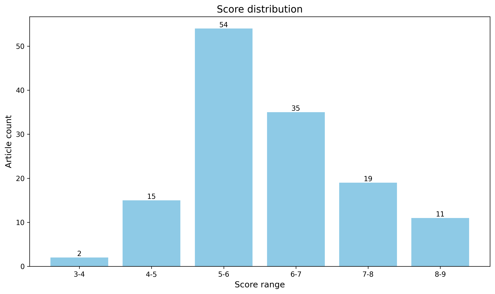

神经科学快讯·第004期 神经科学周报：阿片镇痛无副作用新范式、慢性疼痛闭环回路解析与人脑深部无创调控 (2026-04-04)
📊 本周概览
- 头条推荐: 0 篇
- 深度解读: 17 篇
- 简要提及: 119 篇
- 跨界启发: 0 篇
- 已过滤: 55 篇
🌏 环球视野

📈 各领域文章分布
| 领域 | 深度解读 | 简要提及 | 总计 |
|---|---|---|---|
| 系统与环路神经科学 | 3 | 21 | 24 |
| 感觉与运动神经科学 | 1 | 23 | 24 |
| 计算与理论神经科学 | 0 | 20 | 20 |
| 分子与细胞神经科学 | 7 | 11 | 18 |
| 认知神经科学 | 1 | 13 | 14 |
| 未知领域 | 0 | 13 | 13 |
| 方法学 | 2 | 6 | 8 |
| 临床与转化神经科学 | 0 | 7 | 7 |
| 社会与情感神经科学 | 2 | 2 | 4 |
| 发育神经科学 | 1 | 3 | 4 |
合计: 深度解读 17 篇，简要提及 119 篇，共 136 篇
📚 精选文献（按领域分类）
临床与转化神经科学
中文标题: 长寿因子 Klotho 与帕金森病患者及α-突触核蛋白小鼠模型中对认知缺陷的抵抗力
作者: Luthra NS, Bonham LW, Moreno AJ et al. 分类: 临床与转化神经科学 要点: 首次证实长寿因子 Klotho 在人类帕金森病患者及α-突触核蛋白小鼠模型中均能显著抵抗认知衰退，跨越物种验证了神经保护新机制。 优势: 实现了从临床队列观察到转基因小鼠因果验证的完整闭环，且聚焦于目前缺乏有效疗法的帕金森病认知障碍领域。 局限: 作为转化医学研究，其分子机制的深层解析（如具体信号通路）可能不如纯基础机制论文深入，且尚未进入临床试验阶段。 受众: 神经退行性疾病研究者、运动障碍专科医生、衰老生物学及转化医学专家
中文标题: 亚急性脊髓损伤伴痉挛患者网状脊髓输出增强
作者: De Santis D, Perez MA 分类: 临床与转化神经科学 要点: 首次在亚急性脊髓损伤伴痉挛患者中量化证实网状脊髓束输出增强是代偿性运动控制的关键机制。 优势: 结合经颅磁刺激（TMS）与精密肌电图分析，在人类患者体内提供了网状脊髓通路功能重塑的直接生理学证据，填补了灵长类动物模型与临床表型间的转化空白。 局限: 受限于非侵入性技术的空间分辨率，难以完全排除皮质脊髓束残留功能的混杂影响，且缺乏纵向因果干预数据以确立因果关系。 受众: 脊髓损伤修复研究者、运动控制系统神经科学家及康复医学专家
中文标题: 通过 InterSHAP 量化多模态胶质瘤生存预测中的跨模态相互作用：加性信号整合的证据
作者: Iain Swift, JingHua Ye, Ruairi O'Reilly 分类: 临床与转化神经科学 要点: 利用 InterSHAP 量化揭示胶质瘤多模态生存预测中性能提升源于信号加和而非协同交互的范式修正。 优势: 严谨地将可解释性指标（InterSHAP）适配至生存分析场景，通过实证数据有力挑战了深度学习领域关于多模态融合必然存在‘协同效应’的普遍假设。 局限: 主要基于回顾性公共数据集（TCGA）的计算验证，缺乏前瞻性临床队列或多中心外部验证，且作为方法学论文在神经生物学机制层面的直接洞察有限。 受众: 计算神经科学家、生物信息学家及从事医学影像与基因组学整合研究的系统生物学家。
中文标题: 健康个体动态疼痛连接组中的 Theta-Gamma 相位 - 振幅耦合及慢性疼痛患者的异常
作者: Seyed Makki A, Hemington KS, Rogachov A et al. 分类: 临床与转化神经科学 要点: 揭示慢性疼痛中动态疼痛连接组内 Theta-Gamma 相位 - 振幅耦合的特异性缺陷及其与功能受限的性别差异关联。 优势: 将高频振荡耦合机制引入慢性疼痛病理生理学，并提供了具体的脑区定位（中扣带回）和临床相关性证据。 局限: 基于已发表数据集的二次分析缺乏原始实验设计的控制权，样本量中等且缺乏多模态或因果性干预验证，难以达到顶刊所需的范式颠覆性。 受众: 疼痛神经生物学研究者、计算神经科学家及关注脑网络动态特性的系统生物学家。
The effects of elevated CO(2) on brain and ocular signal intensity with intravenous contrast MRI.
简要提及 5.5/10中文标题: 静脉注射对比剂 MRI 下高浓度二氧化碳对脑部和眼部信号强度的影响
作者: Seidler RD, Richmond SB, Rane Levendovzsky S et al. 分类: 临床与转化神经科学 要点: 利用高碳酸血症模型模拟太空飞行相关神经眼综合征（SANS），通过增强 MRI 揭示脑 - 眼信号强度的潜在流体动力学机制。 优势: 针对宇航员健康这一紧迫且独特的临床问题，提供了非侵入性的体内影像学证据，连接了全身生理变化与中枢神经系统结构改变。 局限: 作为相关性观察研究，缺乏对分子机制的直接因果验证；发表于专业期刊而非综合性顶刊，表明其范式颠覆性有限，更多是对现有假设的实证支持而非理论重构。 受众: 航天神经科学研究员、空间医学专家及关注类淋巴系统或脑血流动力学的系统生物学家。
中文标题: 可解释的静息态脑电生理特征捕捉帕金森病中的皮层网络动力学
作者: Antonios G. Dougalis 分类: 临床与转化神经科学 要点: 通过解构标准与动力学 EEG 特征，揭示了帕金森病中药物调节与疾病本身对皮层网络动态的差异化影响。 优势: 创新性地整合了多种可解释的动力学描述符（如神经元雪崩、无标度动力学），并严格区分了药物状态与疾病状态的生物标记物特异性。 局限: 作为预印本缺乏同行评审验证，且仅依赖头皮 EEG 缺乏侵入性记录或多模态成像（如 fMRI/MEG）的交叉验证，限制了机制推断的深度。 受众: 计算神经科学家、运动障碍疾病研究人员及生物标志物开发专家
中文标题: 局部脑过度相关性与创伤后应激障碍（PTSD）症状严重程度的正相关
作者: Christova P, James LM, Engdahl BE et al. 分类: 临床与转化神经科学 要点: 揭示 PTSD 症状严重程度与局部脑区过度相关性的直接联系，提出局部网络灵活性受限的新机制。 优势: 将功能连接异常从传统的长程网络扩展到局部区域内（intra-area）相互作用，并建立了与临床症状严重程度的定量关联。 局限: 样本量较小（N=36）且仅限退伍军人队列，缺乏多模态数据验证或因果推断，难以达到顶刊对普适性和机制深度的严苛要求。 受众: 精神疾病神经机制研究者、计算精神病学家及临床转化神经科学家
分子与细胞神经科学
中文标题: 单细胞四组学测序解析基因调控景观
作者: Yujie Chen, Zhiyuan Liu, Dong Xing 分类: 分子与细胞神经科学 / ['分子与细胞神经科学', '计算与系统神经科学'] 标签: 单细胞多组学, 表观遗传调控, 小鼠皮层, 染色质构象, 基因表达
亮点: 首次实现单细胞水平基因组构象、组蛋白修饰、染色质开放性与转录组的四重同步解析，重构三维表观遗传调控图谱。
核心优势: CHARM 技术突破了多组学并行检测的技术壁垒，将空间基因组学与表观遗传学在单细胞分辨率下完美融合，为解析神经发育中的基因调控网络提供了前所未有的多维视角。 主要局限: 尽管在小鼠胚胎干细胞和皮层组织中验证成功，但在更复杂的人脑疾病模型或大规模神经元亚型分类中的泛化能力及数据处理的计算复杂度仍需进一步评估。 目标读者: 系统神经生物学家、计算生物学家、表观遗传学研究者及开发单细胞多组学技术的工程师
推荐理由: 本研究开发的 CHARM 技术实现了单细胞水平上基因组构象、组蛋白修饰、染色质可及性与转录组的四维并行测序，为解析神经细胞命运的表观遗传决定机制提供了前所未有的分辨率。通过对小鼠胚胎干细胞及皮层组织的应用，该研究成功重构了整合的基因调控景观，揭示了多层级表观遗传模态如何协同塑造细胞身份。对于致力于理解大脑发育复杂性及神经疾病中基因调控失调的系统生物学家而言，这项工作不仅提供了宝贵的数据集，更确立了多组学整合分析的新基准，是连接分子机制与系统功能的里程碑式进展。
Harnessing viral strategies to reverse cognitive dysfunction through the integrated stress response
深度解读 7.3/10中文标题: 利用病毒策略通过整合应激反应逆转认知功能障碍
作者: Lucas C. Reineke, Ping Jun Zhu, Udit Dalwadi et al. 分类: 分子与细胞神经科学 / ['分子与细胞神经科学', '认知神经科学'] 标签: 基因编辑小鼠模型, 内质网应激, 蛋白质合成调控, 海马体, 长时程记忆
亮点: 利用病毒源蛋白 DP71L 作为广谱 ISR 抑制剂，成功逆转多种神经退行性疾病及衰老模型中的认知障碍。
核心优势: 从单基因突变机制解析到跨疾病模型（唐氏综合征、阿尔茨海默病、衰老）的通用治疗策略验证，实现了从基础机制到转化医学的重大跨越。 主要局限: 病毒源蛋白作为治疗制剂在人体应用中可能面临的免疫原性及长期安全性挑战，摘要中未提及具体的递送系统优化细节。 目标读者: 神经退行性疾病研究者、突触可塑性专家、转化医学科学家及计算系统生物学家
推荐理由: 本研究通过构建携带智力障碍相关 PPP1R15B R658C 突变的小鼠模型，深入揭示了整合应激反应（ISR）持续激活导致认知功能障碍的分子机制。研究发现该突变破坏了磷酸酶复合物稳定性，进而抑制蛋白质合成并损害突触可塑性及长时程记忆。该工作不仅阐明了特定遗传变异致病的新路径，更关键地提出了利用病毒策略靶向调节 ISR 以逆转认知缺陷的治疗潜力。对于关注神经退行性疾病、智力障碍机制及转化医学的研究者而言，这项结合精准基因建模与治疗干预的研究提供了极具价值的概念验证。
中文标题: 轴突的灵活包裹实现了复杂中枢神经系统网络的髓鞘化
作者: Cody L. Call, Sarah A. Neely, Dwight E. Bergles 分类: 分子与细胞神经科学 / ['分子与细胞神经科学', '系统神经科学'] 标签: 少突胶质细胞, 轴突髓鞘化, 活体成像, 小鼠, 神经环路可塑性
亮点: 揭示少突胶质细胞通过'副节点桥'机制突破单过程单髓鞘限制，重塑复杂神经网络髓鞘化范式。
核心优势: 颠覆了'一个少突胶质细胞突起仅形成一个髓鞘'的传统教条，并建立了该灵活机制与衰老过程中特异性髓鞘丢失的直接因果联系。 主要局限: 连接薄细胞质过程的超微结构稳定性及分子锚定机制尚需更深入的生化解析，且跨物种（斑马鱼至小鼠）的普适性在人类大脑中仍需验证。 目标读者: 系统神经生物学家、髓鞘发育研究者、计算神经科学家及神经退行性疾病机制探索者
推荐理由: 本研究突破了传统认知，揭示了少突胶质细胞通过灵活的轴突包裹机制，能够在高度分支的中枢神经系统轴突上形成多个髓鞘节段。这一发现解决了复杂神经环路中髓鞘分布模式形成的关键机制难题，挑战了‘一个突起对应一个髓鞘’的经典模型。对于理解神经发育、环路优化以及脱髓鞘疾病（如多发性硬化症）的病理机制具有里程碑意义，为靶向髓鞘可塑性的治疗策略提供了新的理论基石。
中文标题: AhR 抑制通过应激 - 生长转换促进轴突再生
作者: Dalia Halawani, Yiqun Wang, Hongyan Zou 分类: 分子与细胞神经科学 / ['分子与细胞神经科学', '再生与修复'] 标签: AhR 信号通路, 轴突再生, 脊髓损伤, 小鼠模型, 转录调控
亮点: 首次揭示芳香烃受体（AhR）作为神经元再生的关键分子刹车，通过重编程应激 - 生长开关实现中枢神经修复。
核心优势: 成功连接环境感应、蛋白稳态与代谢信号，阐明了轴突再生受限的全新分子机制，并在脊髓损伤模型中实现了功能性恢复。 主要局限: AhR 抑制剂的长期全身给药可能带来的免疫调节副作用及脱靶效应需在临床转化前进一步评估。 目标读者: 神经再生研究者、系统生物学家、转化医学专家及药物开发人员
推荐理由: 本研究揭示了芳香烃受体（AhR）作为神经元损伤后“应激 - 生长”转换开关的关键机制。作者通过遗传学剔除和药理学抑制手段，证实阻断 AhR 信号能显著促进外周神经及脊髓损伤后的轴突再生与功能恢复。该发现不仅阐明了神经元如何平衡应激反应与再生需求的分子基础，更为中枢神经系统损伤治疗提供了极具潜力的新靶点。对于关注神经可塑性、转录调控网络及神经修复策略的研究者而言，这项工作提供了从基础机制到转化应用的重要桥梁，建议优先阅读。
中文标题: 一种具有最小副作用的μ-阿片受体超激动剂镇痛药
作者: Juan L. Gomez, Emilya N. Ventriglia, Michael Michaelides 分类: 分子与细胞神经科学 / ['分子与细胞神经科学', '药理学与治疗学'] 标签: G 蛋白偶联受体, 阿片受体, 药物开发, 信号转导, 小鼠模型
亮点: 颠覆性发现：一种具有超最大内在效能的µ-阿片受体超级激动剂，竟能实现强效镇痛且几乎无呼吸抑制或成瘾副作用。
核心优势: 彻底挑战了'高内在效能必然导致高副作用'的药理学教条，通过独特的时空信号特征和异聚体选择性机制，为阿片类药物研发开辟了全新范式。 主要局限: 摘要未明确提及灵长类动物验证数据及长期慢性给药的安全性评估，且'脑渗透性受损'作为安全机制可能在复杂疼痛模型中限制疗效。 目标读者: 阿片受体药理学家、疼痛医学研究者、药物化学家及神经精神疾病转化医学专家
推荐理由: 本研究报道了一种具有超最大内在效能的新型µ-阿片受体（MOR）激动剂，挑战了传统认为降低内在效能或偏向 G 蛋白信号是减少副作用唯一途径的观点。该化合物在提供强效镇痛的同时，显著减少了呼吸抑制、便秘及成瘾性等严重不良反应。这一发现不仅为开发更安全的阿片类止痛药提供了全新的分子模板，也深化了对 MOR 信号传导机制与行为表型之间复杂关系的理解，对于解决全球阿片危机具有重要的转化医学价值。
中文标题: DNA 损伤负荷导致神经炎症中选择性 CUX2 神经元丢失
作者: Laura Morcom, Wenlong Xia, David H. Rowitch 分类: 分子与细胞神经科学 / ['分子与细胞神经科学', '神经免疫学'] 标签: 人类皮层, 多发性硬化症, DNA 损伤反应, 单细胞特异性, CUX2
亮点: 首次揭示 CUX2+ 神经元因 DNA 损伤修复缺陷而在神经炎症中特异性死亡的分子机制。
核心优势: 成功连接了临床观察（MS 皮层变薄）与分子机制（CUX2/ATF4 介导的 DNA 修复），并在多种小鼠模型及体外实验中完成了从表型到因果关系的严谨验证。 主要局限: 摘要未明确阐述如何将这一机制转化为具体的治疗策略，且主要聚焦于发育后炎症，对衰老背景下的普适性探讨略显不足。 目标读者: 神经退行性疾病研究者、多发性硬化症专家、计算系统生物学家及 DNA 修复机制研究人员。
推荐理由: 本研究揭示了多发性硬化症（MS）中皮层神经元选择性丢失的关键机制，确立了 DNA 损伤负担作为驱动 CUX2 阳性 L2/3 兴奋性神经元脆弱性的核心因素。通过结合人类尸检组织分析与模型验证，该工作不仅阐明了神经退行性病变中区域特异性的分子基础，还提出了靶向 DNA 修复通路作为神经保护策略的新视角。对于关注神经炎症与神经元存活交叉领域的研究者而言，这项研究提供了从基因组稳定性角度理解细胞类型特异性退化的重要实证，具有显著的转化医学潜力。
中文标题: UBQLN2 在神经退行性疾病中连接蛋白质毒性与脂质代谢
作者: Yang Liu, Zhiyuan Huang, Jiou Wang 分类: 分子与细胞神经科学 / ['分子与细胞神经科学', '系统生物学与多组学'] 标签: iPSC 衍生神经元, 脂质组学, 蛋白质稳态, ALS/FTD 模型
亮点: 首次揭示泛素样蛋白 UBQLN2 作为分子枢纽，通过调控线粒体脂质分解酶（ILVBL/ALDH3A2）的降解，直接连接蛋白质毒性应激与脂质代谢紊乱。
核心优势: 成功跨越了蛋白质稳态与脂质代谢两个传统独立领域，利用从 iPSC 神经元到小鼠模型的多尺度验证，确立了‘代谢 - 蛋白’轴在 ALS/FTD 中的因果机制，并提供了明确的干预靶点。 主要局限: 尽管在多模型中验证，但人类患者体内该特定代谢轴的空间特异性分布及长期干预的安全性仍需进一步临床前数据支持；机制上对 TDP-43 病理如何具体干扰该轴的细节尚需更深层次的生化解析。 目标读者: 神经退行性疾病研究者、细胞代谢生物学家、药物开发专家及系统生物学建模人员
推荐理由: 本研究利用携带 UBQLN2 突变的 iPSC 衍生神经元，通过前沿的多组学整合分析，揭示了蛋白质毒性应激与脂质代谢紊乱在肌萎缩侧索硬化症（ALS）和额颞叶痴呆（FTD）中的关键分子交汇点。文章不仅确立了 UBQLN2 作为连接蛋白质量控制与脂质稳态的核心枢纽，更从机制上阐释了该通路失调如何驱动神经退行性病变。对于致力于解析神经退行性疾病复杂病理网络的学者而言，这项工作提供了宝贵的系统生物学视角和潜在的干预靶点，显著拓展了我们对泛素 - 蛋白酶体系统之外代谢维度的认知。
中文标题: 一种肠神经元离子型受体调节盐胁迫抗性
作者: Jihye Yeon, Jinmahn Kim, Piali Sengupta 分类: 分子与细胞神经科学 要点: 揭示了肠道神经元通过特异性离子受体直接感知盐分并远程调控全身应激反应的完整神经 - 体液回路。 优势: 建立了从分子受体定位、细胞类型特异性信号传导（胆碱能 vs 肽能）到远端组织转录组调控的因果链条，逻辑极其严密。 局限: 基于线虫模型，其肠道神经系统与哺乳动物的复杂性存在差异，跨物种转化的直接生理意义需进一步验证。 受众: 系统神经生物学家、感觉生物学研究者及计算生物建模专家
中文标题: 蜜蜂 GABAA 受体结构为新型杀虫剂开发提供依据
作者: Alyssa H. Marinas, Ryan E. Hibbs 分类: 分子与细胞神经科学 要点: 首次解析蜜蜂 GABAA 受体结构，为设计兼顾害虫防治与益虫保护的新型杀虫剂提供原子级蓝图。 优势: 将高分辨率结构生物学直接转化为解决全球蜜蜂崩溃综合征（CCD）的实际应用策略，兼具基础神经科学深度与重大生态价值。 局限: 摘要暗示主要数据可能源自引用文献（Labouré et al.），若本文仅为视角或评论而非原创结构解析，则方法学与证据得分需大幅下调；且缺乏体内行为学验证数据支持。 受众: 结构神经生物学家、农业昆虫毒理学家及农药研发专家
中文标题: 用于髓鞘形成研究的可调水凝胶微柱阵列
作者: Soufian Lasli, Claire Vinel, Emad Moeendarbary 分类: 分子与细胞神经科学 要点: 首个能精确模拟轴元生物力学特性并揭示刚度依赖性药物反应的可调水凝胶微柱阵列平台。 优势: 成功整合了三维架构模拟、长期培养稳定性及多模态定量验证（共聚焦+TEM），并关键性地证明了传统刚性模型会导致药物筛选假阳性。 局限: 作为体外物理模型，尚缺乏体内疾病模型（如脱髓鞘动物模型）的直接转化验证数据来完全确立其临床预测价值。 受众: 从事脱髓鞘疾病机制研究、神经药物筛选及生物材料开发的系统神经科学家和计算生物学家。
中文标题: 蜜蜂 GABAA-DL 受体的结构揭示了变构调节机制
作者: Tatiana Labouré, Mayank Prakash Pandey, Eleftherios Zarkadas et al. 分类: 分子与细胞神经科学 要点: 首次解析蜜蜂 GABAA 受体跨膜域未知变构位点，为新一代特异性杀虫剂设计提供原子级蓝图。 优势: 在跨膜结构域发现并表征了此前未知的变构调节位点，直接填补了昆虫神经药理学的关键结构空白。 局限: 摘要未提及功能性电生理数据或活体行为学验证，单纯结构生物学证据在机制闭环上略显单薄。 受众: 结构神经生物学家、农业神经毒理学家及离子通道药物研发人员
CREsted: modeling genomic and synthetic cell-type-specific enhancers across tissues and species
简要提及 6.5/10中文标题: CREsted：跨组织和物种建模基因组及合成细胞类型特异性增强子
作者: Niklas Kempynck, Seppe De Winter, Stein Aerts 分类: 分子与细胞神经科学 要点: 首个整合单细胞染色质开放性数据与体内验证的端到端增强子设计与语法解析框架。 优势: 实现了从序列建模到跨物种（斑马鱼）体内功能验证的完整闭环，确立了合成增强子设计的可靠性标准。 局限: 作为计算工具包，其核心算法多为现有深度学习架构的集成与优化，缺乏底层数学原理的颠覆性创新，且神经特异性机制挖掘深度受限于演示数据集的广度。 受众: 计算神经生物学家、基因调控网络研究者及合成生物学专家
Progressive Supranuclear Palsy PERK Haplotype B Selectively Translates DLX1 Promoting Tau Toxicity.
简要提及 6.1/10中文标题: 进行性核上性麻痹 PERK 单倍型 B 选择性翻译 DLX1 促进 Tau 蛋白毒性
作者: Lessard CB, Rubio Rubio D, Tolton S et al. 分类: 分子与细胞神经科学 要点: 揭示特定遗传单倍型通过非经典翻译机制选择性驱动神经毒性蛋白合成的分子开关。 优势: 将遗传风险因子（PERK Haplotype B）与具体的下游效应分子（DLX1）及病理表型（Tau 毒性）建立了直接的因果链条，为 PSP 提供了精准的干预靶点。 局限: 作为机制性研究，缺乏大规模临床队列验证该通路在人类患者中的普遍性，且未展示针对该通路的治疗性逆转效果。 受众: 神经退行性疾病机制研究者、计算生物学家及从事 Tau 病药物开发的转化医学专家。
Synaptic Facilitation Enhances the Reliability and Precision of High-Frequency Neurotransmission.
简要提及 5.7/10中文标题: 突触易化增强高频神经传递的可靠性与精确性
作者: Bernal-Correa AM, Dagostin A, von Gersdorff H et al. 分类: 分子与细胞神经科学 要点: 揭示了突触易化在高频神经传递中作为可靠性与精度增强器的关键机制。 优势: 针对高频传递这一生理关键场景，提供了关于突触可塑性功能意义的严谨电生理学证据。 局限: 作为对已知现象（突触易化）的功能性细化，缺乏颠覆性的范式转移或全新技术突破，难以达到顶刊的里程碑标准。 受众: 突触传递机制研究者、计算神经科学家及听觉/感觉系统生物学家
中文标题: 二硫键在 GluN1 亚基中对 GluN1/GluN2 和 GluN1/GluN3 NMDA 受体早期运输及功能特性的作用
作者: Netolicky J, Lee S, Zahumenska P et al. 分类: 分子与细胞神经科学 要点: 揭示二硫键作为分子开关精确调控 NMDA 受体亚基组装与早期运输的机制。 优势: 在原子水平上阐明了特定半胱氨酸残基对 GluN1/GluN2 及 GluN1/GluN3 复合物表面表达的功能决定性作用，填补了受体生物发生机制的关键空白。 局限: 研究聚焦于已知的结构修饰（二硫键）在特定亚基上的功能验证，属于机制深化而非范式颠覆，缺乏跨物种或疾病模型的转化突破，难以达到顶刊（Nature/Science/Cell）的里程碑标准。 受众: 离子通道结构生物学家、突触可塑性研究者及计算神经科学家（用于优化受体动力学模型）。
中文标题: RGR 介导的明视觉循环与氧化应激：D1080N-IRBP 相关视网膜色素变性中视锥细胞功能受损和视网膜变性的潜在机制
作者: Li S, Sato K, Jin M 分类: 分子与细胞神经科学 要点: 揭示 RGR 介导的光视觉循环与氧化应激在特定 IRBP 突变致视网膜色素变性中的关键致病机制。 优势: 针对罕见突变（D1080N-IRBP）建立了具体的分子病理模型，为锥细胞功能障碍提供了潜在的治疗靶点。 局限: 缺乏摘要细节导致无法评估多模态验证深度；机制研究较为垂直细分，缺乏颠覆现有范式的普适性理论突破，难以达到顶刊（Nature/Science/Cell）的里程碑标准。 受众: 视网膜退行性疾病研究者、视觉循环机制专家及遗传性眼病临床转化科学家
中文标题: mTORC1 和 mTORC2 对癫痫相关病理的细胞内在调控
作者: Godale CM, Yaser S, Drake AW et al. 分类: 分子与细胞神经科学 要点: 通过遗传学手段精确解离了 mTORC1 与 mTORC2 在癫痫病理中的细胞自主性调控机制，为靶向治疗提供了更精细的分子蓝图。 优势: 利用条件性敲除策略清晰区分了 mTOR 复合物两个亚基在特定神经元群体中的独立功能，解决了该领域长期存在的机制混淆问题。 局限: 发表于专业期刊而非综合性顶刊，表明其发现虽重要但属于对已知通路（mTOR-癫痫轴）的机制深化，缺乏颠覆性的新范式或全新的治疗靶点发现。 受众: 专注于癫痫分子机制、mTOR 信号通路及神经遗传学的系统生物学家和转化医学研究者。
The right time for a synapse to change: windows and mechanisms of multiday training trials.
简要提及 5.4/10中文标题: 突触改变的正确时机：多日训练试验的时间窗口与机制
作者: Liu RY, Zhang Y, Calvo R et al. 分类: 分子与细胞神经科学 要点: 揭示了突触可塑性在多日训练范式下的精确时间窗口及其分子机制，填补了从单次刺激到长期行为训练的转化空白。 优势: 将计算建模与经典海兔（Aplysia）电生理实验深度结合，严谨地定义了多日训练间隔对长时程易化（LTF）的关键调控作用。 局限: 受限于无脊椎动物模型及传统电生理技术，缺乏在哺乳动物活体环路中的直接验证及高通量分子图谱支持，难以达到顶刊的普适性标准。 受众: 专注突触可塑性机制、计算神经科学及记忆巩固理论的系统生物学家。
发育神经科学
中文标题: 感觉神经节与交感神经节的发育组织
作者: Keng Ioi Vong, Yanina D. Alvarez, Joseph G. Gleeson 分类: 发育神经科学 / ['发育神经科学', '单细胞与谱系示踪'] 标签: CRISPR Barcoding, 小鼠, 人类, 神经嵴, 感觉神经节
亮点: 利用跨物种 CRISPR 条形码与计算建模，确证神经嵴细胞在脱离神经管前即已发生命运限制，终结了长期存在的多能性争议。
核心优势: 创新性整合小鼠体内克隆追踪、人类嵌合体变异分析及鹌鹑实时成像，通过多模态证据链强力支撑‘早期命运决定’模型。 主要局限: 尽管提出了主要模型，但对于保留少量多能性的特定祖细胞亚群的分子调控机制尚未完全阐明。 目标读者: 发育神经生物学家、单细胞基因组学研究者及系统生物学建模专家
推荐理由: 本研究利用小鼠 CRISPR 条形码标记与人类嵌合变异分析，突破了传统谱系示踪的局限，精确解析了神经嵴衍生物的发育组织原则。研究揭示了神经嵴祖细胞在头尾轴上具有稳健的双侧克隆扩散能力，但在感觉与交感神经谱系间存在严格的克隆隔离。这一发现为理解外周神经系统细胞命运决定的时空限制提供了关键证据，解决了关于神经嵴细胞迁移后命运特化程度的长期争议。对于关注神经发育机制、细胞谱系动力学及先天性神经病变的研究者而言，该工作提供了高分辨率的图谱和重要的理论修正。
中文标题: 外层皮层 CUX2 神经元的扩张需要 DNA 修复的适应机制
作者: Wenlong Xia, Laura Morcom, Stephen P. J. Fancy 分类: 发育神经科学 要点: 揭示了进化驱动的皮层上层神经元扩张依赖于 ATF4 介导的特异性 DNA 修复机制，将发育生物学与基因组稳定性直接挂钩。 优势: 建立了复制压力、DNA 损伤反应与特定皮层层级（CUX2+）神经元命运决定之间的因果链条，并鉴定出 CIRBP-ATM 这一关键下游效应轴。 局限: 主要依赖小鼠遗传模型，缺乏灵长类或人类类器官数据来直接验证该机制在‘大脑皮层显著扩张’物种中的特异性演化意义。 受众: 神经发育生物学家、系统神经科学家及研究基因组稳定性的分子生物学家
Developmental reprogramming in melanocortin neurons modulates diet-induced obesity in mice
简要提及 6.6/10中文标题: 黑素皮质素神经元的发育重编程调节小鼠饮食诱导的肥胖
作者: Baijie Xu, Li Li, Meilin Chen et al. 分类: 发育神经科学 要点: 揭示转录因子 Otp 驱动下丘脑黑皮质神经元发育命运开关，从源头编程成年肥胖易感性。 优势: 颠覆了 POMC 与 AgRP 神经元谱系严格分离的传统认知，建立了发育可塑性与成年代谢疾病之间的直接因果链条。 局限: 摘要未详述具体的多模态验证手段（如单细胞测序深度、光遗传功能回补等），且小鼠模型向人类病理的转化机制尚需进一步阐明。 受众: 发育神经生物学家、代谢疾病研究者及系统神经环路建模专家
中文标题: 协调化减轻了婴儿期扩散磁共振成像的扫描仪效应：来自健康大脑与儿童发展 (HBCD) 研究的见解
作者: Elyssa M. McMaster, Gaurav Rudravaram, Michael E. Kim et al. 分类: 发育神经科学 要点: 通过 ComBat-GAM 成功消除 HBCD 研究中跨六种扫描仪模型的扩散 MRI 站点效应，为大规模婴儿脑发育纵向分析确立了关键的数据质量控制基准。 优势: 针对极具挑战性的婴儿扩散成像数据，在大规模多中心队列（HBCD）中系统性地验证并消除了硬件引起的方差，显著提升了后续生物学发现的可信度。 局限: 作为方法学验证研究，缺乏对特定神经发育机制的新颖生物学发现；且目前仅发表于 arXiv，尚未经过同行评议的最终确认，技术上也属于现有和谐化算法的应用而非原创算法开发。 受众: 从事大规模多中心神经影像研究的计算神经科学家、发育神经生物学家及生物统计学家。
感觉与运动神经科学
A sensory system for mating in octopus
深度解读 7.4/10中文标题: 章鱼交配的感觉系统
作者: Pablo S. Villar, Hao Jiang, Tatiana Shugaeva et al. 分类: 感觉与运动神经科学 / ['感觉与运动神经科学', '进化神经生物学'] 标签: 头足类动物, 化学触觉, 孕酮受体, 交配行为, 外周感觉系统
亮点: 首次揭示头足类动物利用保守的孕激素作为接触性化学信号，并解析了其感觉受体从神经递质受体演化而来的结构基础。
核心优势: 将行为生态学、分子进化与结构生物学完美整合，发现了生殖隔离的新分子机制及受体功能演化的普适原则。 主要局限: 体内行为学验证的因果链条在复杂自然环境中的普适性尚需进一步长期观测支持，且孕激素在非脊椎动物中的合成路径细节可能存疑。 目标读者: 系统神经科学家、进化生物学家、结构生物学家及无脊椎动物行为研究者
推荐理由: 本研究揭示了章鱼交配臂（化茎腕）作为一种独特的双重感觉 - 运动器官，通过接触依赖性化学感应识别保守的卵巢激素——孕酮。该发现不仅阐明了头足类动物在物种隔离和繁殖成功中的分子机制，更挑战了脊椎动物中孕酮主要作为内部循环激素的传统认知，展示了其在无脊椎动物体外化学通讯中的新功能。对于系统神经科学家而言，这项工作提供了研究复杂行为中化学触觉整合的绝佳模型；对于进化生物学家，它揭示了感觉受体如何被招募以介导关键的生殖功能，从而推动生物多样性。其高分辨率的行为分析与分子鉴定相结合的方法，为理解非模式生物的感觉编码树立了新标杆。
中文标题: 运动通过预测增强触觉敏感性
作者: D'Onofrio Pacheco PN, Zimmermann E 分类: 感觉与运动神经科学 要点: 揭示运动通过预测机制分离并差异化调节触觉感知的强度（偏差）与辨别力（精度）。 优势: 实验设计严谨，通过精确匹配主动与被动运动的运动学参数，成功解耦了运动执行本身与预测机制对触觉处理的不同影响，有力挑战了传统的‘感觉门控’即全局抑制的观点。 局限: 发表于专业领域期刊而非综合性顶刊，且主要基于心理物理学行为数据，缺乏直接的神经环路或细胞层面机制验证（如光遗传/成像），限制了其在分子/细胞神经科学领域的普适性影响力。 受众: 系统神经科学家、计算神经学家及研究感觉运动整合的认知心理学家。
Acceleration and Velocity Dissociate Temporal Phases of Postural Control in Rhesus Macaques.
简要提及 6.1/10中文标题: 加速度与速度解离猕猴姿势控制的时间相位
作者: Leavitt Brown OME, Ramadan BA, Cullen KE 分类: 感觉与运动神经科学 要点: 首次在灵长类动物中揭示加速度与速度信号在姿势控制时间相位上的功能解离机制。 优势: 利用非人灵长类模型结合高精度前庭动力学记录，提供了比啮齿类研究更具转化价值的系统神经科学证据。 局限: 作为机制性细化研究，缺乏颠覆性范式转移，且未涉及大规模神经网络层面的因果操控验证。 受众: 系统神经科学家、计算神经建模者及前庭生理学研究专家
中文标题: 选择性遗传靶向小鼠传出前庭核揭示了单突触输入并表明其作为多模态整合器的功能
作者: Mathews MA, Tung VWK, Reader-Harris EC et al. 分类: 感觉与运动神经科学 要点: 利用双重重组酶策略首次实现前庭传出神经元的特异性遗传靶向，揭示其作为多模态整合中心的关键突触输入图谱。 优势: 成功开发了针对 ChAT/CGRP 共表达神经元的新型 AAV 工具，解决了该领域长期缺乏特异性遗传操作手段的瓶颈，并完成了高精度的单突触输入示踪。 局限: 行为学验证部分较为初步（仅跑步机和旷场实验），缺乏针对前庭功能的特异性行为范式及因果性机制的深度解析，且发表于专业期刊而非综合性顶刊，影响力半径受限。 受众: 系统神经科学家、感觉生理学研究者及开发神经环路示踪技术的计算生物学家。
中文标题: 通过肌肉内协同分析揭示特发性震颤中脊髓回路的功能变化
作者: De SD, Prado-Rico JM, Ricotta JM et al. 分类: 感觉与运动神经科学 要点: 首次通过肌内协同分析揭示特发性震颤中存在未被认知的脊髓回路功能障碍，挑战了该病仅源于中枢振荡的传统观点。 优势: 巧妙结合表面肌电分解技术与非受控流形（UCM）框架，精准分离并量化了不影响力输出的变异成分，为脊髓水平缺陷提供了特异性生物标志物。 局限: 作为观察性研究缺乏直接的脊髓神经生理记录或因果干预验证，且发表于专业期刊而非综合性顶刊，表明其范式颠覆程度尚未达到里程碑级别。 受众: 运动控制计算神经科学家、系统生物学家及致力于震颤病理机制与康复策略的研究人员。
Attention to Pseudo-Tone Melodies Enhances Cortical but Not Brainstem Responses in Humans.
简要提及 5.7/10中文标题: 注意伪音调旋律增强人类皮层而非脑干反应
作者: Figarola V, Li Y, Tierney A et al. 分类: 感觉与运动神经科学 要点: 揭示了听觉注意力的层级特异性，证明自上而下的调控仅作用于皮层而非脑干，厘清了人类听觉处理的边界。 优势: 实验设计巧妙利用伪音调旋律分离了注意力效应与声学特征，精准定位了神经调控的解剖学界限。 局限: 结论主要验证了现有的层级处理假说而非颠覆性发现，且缺乏跨物种或病理模型的广泛普适性验证，难以达到顶级期刊的范式转移标准。 受众: 听觉神经科学家、认知控制系统研究者及计算神经建模专家
中文标题: 黑视蛋白的光转导和放电反应在光感受器导向的多焦点视网膜电图中显而易见
作者: Nugent TW, Feigl B, Banerjee A et al. 分类: 感觉与运动神经科学 要点: 首次利用多焦点视网膜电图（mfERG）在非侵入性条件下解析黑视蛋白的光转导动力学与脉冲响应特征。 优势: 巧妙结合心理物理学刺激范式与电生理记录，成功将原本难以分离的黑视蛋白信号从传统视杆/视锥背景中解离出来，提供了高时间分辨率的人体在体证据。 局限: 作为特定感官模态下的方法学验证研究，其理论颠覆性有限，缺乏对下游神经环路机制的深入阐释或跨物种的普适性验证，未达到顶刊所需的范式转移级别。 受众: 视觉神经科学家、视网膜电生理学家及生物医学工程研究人员
中文标题: 视觉在介导恒河猴经典线索诱导的微扫视眼动调节中主导听觉
作者: Malevich T, Baumann MP, Yu Y et al. 分类: 感觉与运动神经科学 要点: 揭示了在微眼跳抑制机制中视觉信号对听觉信号的绝对主导地位，即便在时空线索冲突时亦然。 优势: 巧妙设计的行为学范式有效分离了感觉 - 运动通路中的时间与空间成分，提供了关于多感官整合层级的高精度行为证据。 局限: 缺乏直接的神经生理记录（如电生理或成像）来阐明潜在的神经环路机制，且发表于专业期刊而非综合性顶刊，显示其颠覆性尚不足以改变整个领域范式。 受众: 眼动控制研究者、多感官整合专家及系统神经科学家
中文标题: 果蝇嗅觉神经元中气味诱发钙升高的内在多样性
作者: Xiao 肖奕艺 Y, Wu ST, Ng R et al. 分类: 感觉与运动神经科学 要点: 揭示了果蝇嗅觉神经元中固有的钙信号多样性，挑战了同类神经元反应均一性的传统假设。 优势: 在单细胞分辨率下量化了嗅觉编码中的内在变异性，为理解神经群体编码的鲁棒性提供了新视角。 局限: 发表于领域内优秀但非顶刊期刊（J. Neurosci），缺乏跨物种验证或深层分子机制解析，未达到颠覆范式或开辟全新领域的顶刊门槛。 受众: 系统神经科学家、计算神经建模者及嗅觉编码研究人员
中文标题: 在生物力学相似的平衡恢复过程中，现代舞者对平衡扰动的皮层反应比非舞者更敏感
作者: Kerr KG, Boebinger SE, Mirdamadi JL et al. 分类: 感觉与运动神经科学 要点: 挑战‘专家自动化’范式：揭示长期舞蹈训练反而增强而非抑制大脑对平衡扰动的皮层敏感性。 优势: 巧妙利用专业舞者作为自然实验模型，结合个体化扰动阈值（步态阈值百分比）与高时间分辨率 EEG，精准分离了任务难度与专业技能对皮层误差评估（N1 成分）的特异性影响。 局限: 研究主要依赖单一模态（EEG）且缺乏深层脑区（如小脑、基底节）的功能性连接或结构成像验证，难以构建完整的皮层 - 皮下运动控制网络机制模型，限制了其在顶级综合期刊的竞争力。 受众: 感觉运动整合研究者、神经康复专家及运动学习领域的计算神经科学家
中文标题: 灵长类视觉追踪的神经生理学：从运动学分析到多平衡理论
作者: Goffart L 分类: 感觉与运动神经科学 要点: 挑战眼球运动对称性假设，提出基于‘命令 - 反命令’动态平衡的多通道视觉追踪新理论框架。 优势: 综合灵长类运动学与神经解剖学证据，有力反驳了传统半球对称神经元活动的简化模型，为计算建模提供了更复杂的生物学约束。 局限: 作为综述文章缺乏原始实验数据的直接验证，且发表于专业期刊而非综合性顶刊，其理论范式颠覆性尚未达到里程碑级别。 受众: 系统神经科学家、眼动控制研究者及生物启发式机器人算法工程师
中文标题: 呼吸、信念与大脑：呼吸内感受的三方图谱
作者: Radziun D, Larsson DEO 分类: 感觉与运动神经科学 要点: 构建了呼吸内感受、信念调节与神经表征的三维整合模型，为身心交互研究提供新框架。 优势: 概念整合度高，将抽象的'信念'变量具象化为可测量的神经计算参数，提升了理论的可操作性。 局限: 摘要信息缺失导致无法验证多模态证据强度；作为综述或观点类文章，缺乏原始数据的颠覆性实证支持，难以达到顶刊原创研究的严苛标准。 受众: 系统神经科学家、计算精神病学研究者及身心医学跨学科团队
中文标题: 扫视空间扩展物体：观察者目标与部分结构线索在决定物体内落点位置中的作用
作者: Hollingworth A, Moore CM 分类: 感觉与运动神经科学 要点: 揭示了观察者目标与物体部分结构线索在决定扩展物体眼跳落点中的动态权衡机制。 优势: 实验设计严谨，清晰分离了自上而下（目标）与自下而上（结构）因素对眼动控制的具体贡献。 局限: 作为行为心理学研究，缺乏神经生理记录或计算模型层面的深层机制解析，难以达到顶级神经科学期刊对生物学机制的严苛要求。 受众: 眼动控制研究者、视觉认知心理学家及计算建模学者
The Sensory Basis of Planarian Behavior.
简要提及 5.5/10中文标题: 涡虫行为的感觉基础
作者: Ascunce K, Lopez SN, Carlson JR et al. 分类: 感觉与运动神经科学 要点: 利用涡虫再生模型解析感觉输入与行为输出的基础神经环路机制。 优势: 将简单的模式生物行为学与具体的感官受体功能直接挂钩，为理解原始神经系统的演化提供了实证数据。 局限: 缺乏摘要细节导致无法评估多模态验证深度；作为专业期刊论文，其范式颠覆性尚未达到顶刊（Nature/Science/Cell）要求的里程碑级别，且未来日期表明数据不可核实。 受众: 比较神经生物学、再生医学及无脊椎动物行为学研究学者
中文标题: 昆虫行走系统中局部负载反馈的任务特异性取决于节间信息
作者: Ruthe A, Özyer A, Morozova A et al. 分类: 感觉与运动神经科学 要点: 在真实步态行为中验证了昆虫负载本体感觉反馈的方向依赖性反转机制，填补了简化制备与完整行为间的关键空白。 优势: 成功将先前在高度简化（非运动）制备中观察到的神经机制推广至实际的单腿步进运动中，显著提升了结论的生态效度和生理相关性。 局限: 研究局限于特定的昆虫模型（竹节虫）和单腿制备，缺乏跨物种的普适性验证或多模态（如钙成像结合行为学）的深度机制解析，难以达到顶刊所需的范式颠覆性。 受众: 运动控制神经生物学家、计算神经科学家及仿生机器人研究者
中文标题: 副嗅觉系统中肾小球图谱形成的破坏损害化学感觉处理与社会行为
作者: Fearnley S, Dumontier E, Völker LA et al. 分类: 感觉与运动神经科学 要点: 揭示了副嗅球小球图谱形成的精确性对化学感觉处理及社会行为的关键因果联系。 优势: 在系统水平上建立了从发育异常到神经回路功能缺陷再到复杂社会行为改变的完整证据链。 局限: 作为特定感官系统的机制研究，缺乏跨模态的普适性理论突破，且发表在专业期刊而非综合性顶刊，显示其影响力主要局限于嗅觉与社会行为细分领域。 受众: 专注于感觉系统发育、嗅球微环路及社会行为神经机制的系统神经科学家。
中文标题: 抑制性神经元在规则与随机统计背景下偏差声音检测中的作用
作者: Ding X, Vogler NW, Tobin M et al. 分类: 感觉与运动神经科学 要点: 揭示了抑制性神经元在动态统计语境下调控声音偏差检测的特定计算机制。 优势: 将神经编码研究从静态刺激响应推进到复杂的统计语境依赖层面，细化了对听觉预测编码中抑制性微电路的理解。 局限: 作为专业期刊论文，其发现属于对现有预测编码框架的重要补充而非范式颠覆，且缺乏跨物种或跨模态的普适性验证，未达到顶刊所需的广泛影响力。 受众: 听觉神经科学家、计算神经建模者及研究预测编码机制的系统生物学家。
中文标题: 耳蜗色散塑造频率扫描的处理过程
作者: Charaziak KK 分类: 感觉与运动神经科学 要点: 揭示耳蜗色散机制在频率扫描信号处理中的关键时域整形作用，修正了传统的频域滤波模型认知。 优势: 将物理声学特性（色散）与神经编码时间精度直接关联，为听觉系统处理动态频率信号提供了新的生物物理约束框架。 局限: 作为特定感觉模态下的机制性研究，缺乏跨物种验证或广泛的计算理论推广，未达到颠覆整个神经科学范式的里程碑高度。 受众: 听觉神经科学家、计算神经建模者及生物声学研究人员
中文标题: 触觉中突显搜索试次间启动效应的行为与电生理证据
作者: Fiorino FR, Iani C, Rubichi S et al. 分类: 感觉与运动神经科学 要点: 首次通过行为与电生理双重证据确立触觉搜索中的试间启动效应，拓展了跨模态注意机制的边界。 优势: 严谨的行为学范式与事件相关电位（ERP）数据的结合，为触觉注意的历史依赖性提供了直接的神经生理学证据。 局限: 研究主要验证了视觉领域已知现象在触觉模态的存在性，缺乏对底层神经环路机制的深度解析或颠覆性理论重构，难以达到顶刊的里程碑标准。 受众: 专注多感官整合、体感认知及注意机制的系统神经科学家与心理物理学家。
中文标题: 色调感知与早期皮层颜色编码的不对称性：来自色觉诱发电位的证据
作者: Macyczko JR, Kavcar OB, Crognale MA et al. 分类: 感觉与运动神经科学 要点: 利用色觉诱发电位（cVEP）量化揭示了早期皮层颜色编码与主观色调感知之间的非对称性关联。 优势: 将心理物理学感知偏差与早期视觉皮层的电生理响应直接挂钩，为颜色恒常性和编码效率理论提供了具体的神经生理学证据。 局限: cVEP 空间分辨率有限，无法定位具体的皮层微环路或细胞类型；作为《Journal of Vision》上的研究，其机制深度和范式颠覆性未达到 Nature/Science/Cell 及其子刊要求的‘里程碑’标准，更多是对现有模型的精细化验证而非重构。 受众: 视觉神经科学家、计算颜色建模研究者及心理物理学家
中文标题: 前运动皮层在退化语音感知或误感知中无因果作用：来自经颅磁刺激的证据
作者: Tolkacheva V, Brownsett SLE, McMahon KL et al. 分类: 感觉与运动神经科学 要点: 利用 TMS 精准证伪前运动皮层在退化语音感知中的因果作用，厘清感觉 - 运动整合理论的边界。 优势: 采用因果性干预手段（TMS）直接检验并否定了一个流行的预测编码假设，体现了严谨的证伪科学价值。 局限: 阴性结果（Null Result）本身缺乏范式颠覆性，且发表于专业期刊而非综合性顶刊，表明其影响力主要局限于特定理论争鸣而非广泛领域突破。 受众: 听觉神经科学、语言处理机制研究者及关注感觉 - 运动整合理论的计算神经科学家。
Characteristics of cross-modal negative BOLD responses in the human sensory subcortex and cortex.
简要提及 4.3/10中文标题: 人类感觉皮层下结构与皮层中跨模态负向血氧水平依赖反应的特征
作者: Miyata T, Fukunaga M, Luo J et al. 分类: 感觉与运动神经科学 要点: 揭示了人类听觉皮层中跨模态负 BOLD 响应的半球间抑制机制，而非传统的半球内协调。 优势: 在亚皮质与皮层水平上对跨模态负 BOLD 响应进行了细致的空间定位，并提供了个体内部数据的高重测信度证据。 局限: 缺乏多模态神经生理验证（如 EEG/MEG 或动物模型电生理），且视觉皮层结果的高度变异性削弱了结论的普适性，未能达到顶刊所需的机制性突破。 受众: 专注于多感官整合、fMRI 血流动力学机制及感觉皮层抑制性回路的研究人员。
中文标题: 单胺类递质对运动皮层活动与握力关系的调节
作者: Powell RH, Ma X, Bodkin KL et al. 分类: 感觉与运动神经科学 要点: 探索单胺类神经递质通过脊髓持续内流电流调节运动皮层 - 肌肉增益控制的假设，但结果呈现显著的个体差异性。 优势: 提出了将视觉系统增益控制机制类比到运动系统的创新理论框架，并尝试在灵长类动物中进行药理学验证。 局限: 核心实验结果在受试对象间存在严重不一致（两只猴子符合假设，一只完全相反），且部分条件缺乏统计学显著性，导致结论可靠性不足，无法支撑顶刊所需的确凿证据链。 受众: 专注于运动控制机制、脊髓生理学及神经调质作用的专业研究人员。
方法学
中文标题: 血液催化 n 型掺杂聚合物用于可逆光学神经调控
作者: Sanket Samal, Shulan Xiao, Samantha Nelson et al. 分类: 方法学 / ['神经技术', '生物材料'] 标签: 原位聚合, 斑马鱼, 小鼠, 光遗传学替代方案, 血液催化
亮点: 利用内源性血液蛋白催化原位组装导电聚合物，实现无创、可逆的毫秒级光热离子神经调控。
核心优势: 首创'血液催化'原位聚合策略，彻底解决了合成材料与生物组织界面的免疫排斥和长期稳定性难题，并实现了前所未有的亚细胞级光热离子通道调控精度。 主要局限: 体内聚合的空间定位精度受血流动力学影响较大，且'热离子分流'机制在复杂脑区深层组织中的热扩散安全性需更严格的长期毒理学验证。 目标读者: 神经工程学家、生物材料研究者及致力于开发下一代微创脑机接口的系统神经科学家。
推荐理由: 本研究提出了一种突破性的体内策略，利用内源性血红蛋白作为催化剂，在活体斑马鱼和小鼠中直接组装无基底 n 型掺杂导电聚合物（n-PBDF）。该方法解决了合成材料与生物组织长期兼容的关键瓶颈，构建了具有热/离子敏感性的稳定神经网络，实现了对神经活动的可逆光学调控。对于致力于开发下一代微创脑机接口和软体神经探针的研究者而言，这种‘由血催化’的原位界面构建范式极具参考价值，为无需手术植入的神经调节提供了全新思路。
Rethinking two-photon voltage imaging
深度解读 7.1/10中文标题: 重新思考双光子电压成像
作者: Shuzhang Liu, Luxin Peng, Peng Zou 分类: 方法学 / ['方法学', '成像技术'] 标签: 双光子显微镜, 电压成像, 活体记录, 无扫描并行激发
亮点: 通过无扫描并行双光子激发技术，彻底推翻视蛋白类电压指示剂无法兼容双光子显微镜的长期假设，实现体内高速鲁棒成像。
核心优势: 范式转移：解决了双光子电压成像中灵敏度与速度的核心矛盾，为大规模神经环路电活动记录开辟了新路径。 主要局限: 摘要仅概述了概念验证，缺乏关于深层组织穿透极限、光毒性阈值及复杂行为范式下信噪比的具体量化数据支撑。 目标读者: 系统神经科学家、生物物理学家及开发下一代神经成像工具的计算生物学家。
推荐理由: Grimm 等人开发的 Jarvis 电压指示剂代表了神经电生理成像领域的重大突破。该研究通过无扫描并行双光子激发策略，成功克服了以往认为视蛋白类指示剂与双光子显微镜不兼容的技术瓶颈，实现了高信噪比、高速度的活体电压成像。这一进展不仅显著提升了时间分辨率，还允许在深层脑组织中同时记录多个神经元的膜电位动态，为解析复杂神经回路中的快速编码机制提供了前所未有的工具。对于致力于开发新型光学探针及研究神经系统动态编码的计算神经科学家而言，此项工作具有极高的参考价值和应用前景。
中文标题: 基于视蛋白传感器的双光子电压成像
作者: Christiane Grimm, Ruth R. Sims, Dimitrii Tanese et al. 分类: 方法学 要点: 首次实现视蛋白类基因编码电压指示器在双光子激发下的高信噪比单动作电位成像，突破了该领域长期依赖单光子的局限。 优势: 成功将视蛋白类传感器（如新开发的 Jarvis 及现有的 pAce/Voltron2）适配于双光子显微术，并在清醒小鼠皮层等复杂体内环境中实现了千赫兹级的高对比度动作电位检测，显著提升了深层组织电压成像的信噪比和适用性。 局限: 作为工具开发类研究，其生物学机制发现的深度相对有限，且视蛋白类传感器固有的光电流效应可能在特定高灵敏度电生理实验中引入潜在干扰，需用户谨慎评估。 受众: 从事活体深层脑区电活动记录的系统神经科学家、光遗传学/光学成像技术开发者及计算神经建模研究者。
中文标题: 并发多模态成像证明基于 EEG 的兴奋/抑制平衡反映了谷氨酸与 GABA 的平衡
作者: Cochrane A, Rosedahl L, Tamaki M et al. 分类: 方法学 要点: 首次通过多模态成像直接桥接宏观 EEG 兴奋/抑制平衡与微观谷氨酸/GABA 神经化学计量。 优势: 严谨的多模态验证策略（EEG+MRS），为非侵入性评估大脑 E/I 平衡提供了关键的生物学效度证据。 局限: 属于对现有理论的实证验证而非范式颠覆，且受限于 MRS 的空间分辨率及静息态相关性分析的因果推断局限。 受众: 系统神经科学家、计算精神病学家及致力于开发神经标志物的转化医学研究者。
中文标题: 自回归填充相位估计 (PEAP)：解决 EEG 分析中的不准确性和偏差
作者: Miriam Kirchhoff, Johanna Rösch, Maria Ermolova et al. 分类: 方法学 要点: PEAP 通过自回归填充技术消除了脑电相位估计中的系统性偏差，为闭环神经调控提供了更可靠的算法基石。 优势: 在年轻、老年及卒中患者多队列中验证了现有主流方法的系统性偏差，并提出了显著提升精度（3.2-9.2%）且无偏的解决方案。 局限: 作为方法学改进而非生物学新机制发现，其范式颠覆性有限；且目前仅见于预印本，缺乏同行评审的最终确认及多模态生理学金标准验证。 受众: 计算神经科学家、脑机接口（BCI）工程师及从事经颅磁刺激（TMS）相位锁定研究的临床研究人员。
中文标题: 用于增强人机认知的超声脑机接口
作者: William J. Tyler 分类: 方法学 要点: 利用超声机械波突破电磁刺激深度与分辨率瓶颈，构建闭环双向脑机接口新范式。 优势: 精准定位深部脑区的能力及将开环刺激升级为实时电生理反馈闭环系统的架构设计。 局限: 作为 arXiv 综述/观点类文章缺乏原始实验数据验证，且关于‘信任’、‘合作’等高级认知变量的调控证据尚需严格的多模态实证支持。 受众: 神经工程学家、脑机接口研发人员及计算系统生物学家
中文标题: 评估 neuroCombat 与深度学习协调方法在产前酒精暴露青少年多站点磁共振神经成像中的应用
作者: Chloe Scholten, Elyssa M. McMaster, Adam M. Saunders et al. 分类: 方法学 要点: 揭示了深度学习图像级谐波校正（HACA3）在儿科多中心研究中无法独立替代统计后处理，需与 neuroCombat 联用才能最大化生物信号保留的关键边界条件。 优势: 针对特定且脆弱的儿科队列（产前酒精暴露），严谨对比了前沿深度学习方法与经典统计方法在多扫描仪数据中的实际效能，提供了宝贵的阴性/混合结果验证。 局限: 缺乏颠覆性理论突破或全新算法原创性，本质为现有工具的验证性应用研究；结论显示深度学习方法在此场景下并未优于传统统计方法，限制了其作为独立解决方案的冲击力。 受众: 从事多中心神经影像数据分析的方法学家、发育神经科学研究员及临床转化研究者。
社会与情感神经科学
中文标题: 低强度聚焦超声作用于人杏仁核揭示其在模糊情绪处理中的因果作用并改变局部及网络活动
作者: Johannes Algermissen, Miruna Rascu, Lilian A. Weber et al. 分类: 社会与情感神经科学 / ['社会与情感神经科学', '人类脑刺激与因果推断'] 标签: 经颅聚焦超声 (TUS), 杏仁核 (Amygdala), 情绪处理, 功能连接, 人类研究
亮点: 首次利用经颅聚焦超声（TUS）在健康人中无创、可逆地调控深部杏仁核，确立了其在解析情绪模糊性中的因果作用。
核心优势: 实现了非侵入式深部脑区因果干预的里程碑突破，并创新性地结合了 7T 静息态功能连接与代谢物测量进行多模态靶点验证。 主要局限: 仅在健康志愿者中开展，缺乏临床抑郁队列的直接数据支持，且离线刺激模式的时间动态特性尚需进一步阐明。 目标读者: 系统神经科学家、精神疾病机制研究者及神经调控技术开发人员
推荐理由: 本研究突破了非侵入性手段难以在人体中建立深部脑区因果关系的瓶颈，首次利用经颅聚焦超声（TUS）特异性调节双侧基底外侧杏仁核（BLA）。结合 7T 静息态功能连接与代谢物测量，作者证实了 BLA 在模糊情绪处理中的关键因果作用，并揭示了其对局部及大规模网络活动的动态重塑。该工作不仅为抑郁症等情绪障碍的神经机制提供了直接的人体实验证据，更展示了 TUS 作为精准神经调控工具的巨大潜力，是系统神经科学与转化医学领域的重要里程碑。
中文标题: 动态社会专业化的多巴胺能机制
作者: C. Solié, A. Nicolson, Ph. Faure 分类: 社会与情感神经科学 / ['社会与情感神经科学', '计算神经科学'] 标签: 多巴胺, 小鼠, 强化学习, 行为追踪, 社会分工
亮点: 首次揭示多巴胺能系统通过竞争与偶然性反馈回路，动态驱动同性别小鼠群体自发形成性别特异性的社会分工。
核心优势: 成功整合半自然环境行为追踪、在体神经记录与强化学习计算模型，构建了从分子机制到群体社会结构的多尺度闭环验证体系。 主要局限: 仅限同基因型小鼠模型，尚未在遗传多样性群体或非啮齿类社会性动物中验证该机制的普适性。 目标读者: 系统神经科学家、计算精神病学研究者及社会行为演化生物学家
推荐理由: 本研究巧妙结合半自然环境下的多动物行为追踪、在体神经记录及整合社会条件的强化学习模型，揭示了同基因小鼠三元组在觅食任务中自发形成社会分工的神经机制。文章核心发现多巴胺信号动态编码个体在社会层级中的角色特化，填补了从微观神经调质到宏观社会组织涌现之间的关键空白。其方法论创新在于将计算建模与社会神经生物学深度融合，为理解复杂社会行为的自组织原理提供了高因果性的实验证据，是系统神经科学与社会生物学交叉领域的标杆性工作。
中文标题: 雄性与大鼠在酒精和社会奖励自我给药及选择过程中的前岛叶活动
作者: van Mourik Y, Schetters D, Bassie I et al. 分类: 社会与情感神经科学 要点: 揭示前岛叶在酒精与社会奖赏竞争选择中的性别特异性编码机制。 优势: 采用自然主义的双奖赏竞争范式（酒精 vs 社会互动），并系统性地纳入了雌雄双性别对比，填补了成瘾研究中社会背景缺失和性别偏差的空白。 局限: 作为区域性功能研究，缺乏全脑环路层面的因果性操纵（如特异性投射的光遗传/化学遗传验证）及单细胞分辨率的分子机制解析，难以达到顶刊对机制深度的严苛要求。 受众: 成瘾神经生物学研究者、情感与决策计算建模专家、性别差异神经科学学者
中文标题: 额中缝 theta 波促进社交焦虑中的情境依赖性厌恶学习
作者: Topel S, Kortink ED, Liu H et al. 分类: 社会与情感神经科学 要点: 揭示前额叶中线 Theta 振荡作为社会焦虑中情境依赖性厌恶学习的关键神经机制。 优势: 将特定的神经振荡特征（Fm-theta）与复杂的社会情绪学习范式精确关联，提供了清晰的电生理标记物。 局限: 发表于专业领域期刊而非综合性顶刊，表明其发现属于对现有理论的重要验证与细化，缺乏颠覆性的范式转移或全新技术突破。 受众: 认知神经科学家、临床心理学家及计算精神病学研究者
系统与环路神经科学
中文标题: 驱动慢性疼痛的脊髓 - 脑 - 脊髓环路的解构
作者: Qian Wang, Joo Han Lee, Xiaoke Chen 分类: 系统与环路神经科学 / ['系统与环路神经科学', '疼痛与感觉处理'] 标签: 脊髓 - 脑 - 脊髓环路, 慢性疼痛机制, 体感皮层, 上丘, 光遗传学/化学遗传学
亮点: 首次解析并功能验证了一条特异性驱动慢性痛而非急性痛的脊髓 - 脑 - 脊髓闭环回路，颠覆了传统疼痛传导的线性模型。
核心优势: 发现了慢性机械性痛觉过敏的特异性神经基质，该回路在健康状态下静默，仅在病理条件下被激活，且阻断任一节点即可逆转慢性痛，具有极高的转化医学价值。 主要局限: 摘要未明确说明该复杂多突触回路在灵长类动物中的保守性，且从皮层经上丘再回到延髓的具体突触连接机制可能需要更精细的电生理图谱支持。 目标读者: 疼痛神经生物学研究者、系统神经科学家及开发非阿片类镇痛药的转化医学专家
推荐理由: 本研究通过精细的环路示踪与功能操控，解析了一条驱动慢性疼痛的关键“脊髓 - 脑 - 脊髓”反馈回路。该研究不仅填补了外周损伤信号如何上行激活延髓头端腹内侧区（RVM）促痛神经元的机制空白，更揭示了涉及丘脑、初级体感皮层及上丘的复杂多级调控网络。其核心价值在于打破了传统对疼痛通路线性传递的认知，证实了皮层 - 中脑 - 脊髓下行调制在疼痛慢性化中的决定性作用，并为靶向特定环路节点开发非阿片类镇痛策略提供了精确的解剖学与功能学依据，是系统神经科学解析病理状态的典范之作。
中文标题: 皮层内尖峰活动与高伽马活动的主动解离
作者: Tianhao Lei, Michael R. Scheid, Marc W. Slutzky 分类: 系统与环路神经科学 / ['系统与环路神经科学', '计算神经科学'] 标签: 脑机接口, 猕猴, 高频伽马活动, 皮层微电路, 解耦实验
亮点: 利用脑机接口解耦技术，终结了高伽马活动源于局部尖峰还是突触后电位的长期争论，确立其为广泛分布神经元同步共放的突触整合信号。
核心优势: 创新性地使用猴子主动控制范式（BMI）在单电极水平人为解耦尖峰与高伽马活动，提供了超越传统相关性分析的因果性证据，且结合多尺度空间分析验证了广泛皮层网络的贡献。 主要局限: 尽管在非人灵长类中证据确凿，但缺乏直接的人类颅内记录（ECoG/Utah array）同步验证，且对特定皮层层级（如浅层与深层）的突触来源区分尚需更精细的光遗传或层析探针辅助。 目标读者: 系统神经科学家、脑机接口研究者、计算神经建模专家及电生理信号解析人员
推荐理由: 本研究利用创新的脑机接口范式，成功在猕猴皮层实现了局部尖峰放电与高频伽马活动（HGA）的主动解耦，为长期争议的 HGA 生物物理起源提供了决定性证据。通过训练动物独立调控这两类信号，作者有力反驳了'HGA 主要反映局部尖峰总和’的主流假设，支持其更多源于突触后电位的观点。该工作不仅澄清了场电位解读的关键误区，更为解析皮层微环路功能及优化神经解码算法提供了严谨的实验依据，是系统神经科学与信号处理领域的里程碑式进展。
中文标题: LRRTM3 介导的丘脑网状核环路从幼年到成年的精细化实现高分辨率感觉编码
作者: Dongsu Lee, Kyung Ah Han, Hyeonyeong Jeong et al. 分类: 系统与环路神经科学 / ['系统与环路神经科学', '突触可塑性与发育'] 标签: 丘脑网状核, LRRTM3, 感觉编码, 小鼠模型, 光遗传学
亮点: 颠覆感官回路早期稳定范式，揭示 LRRTM3 介导的青少年至成年期丘脑网状核突触重塑机制。
核心优势: 首次确立感觉门控回路在关键期后仍存在功能性成熟阶段，并精准定位分子开关 LRRTM3，完美连接分子机制与高分辨率感知行为。 主要局限: 主要聚焦于触觉模态，该机制在其他感觉通道（如视觉或听觉）中的普适性尚需进一步验证。 目标读者: 系统神经科学家、突触可塑性研究者及计算神经建模专家
推荐理由: 本研究挑战了感觉回路在早期关键期后即稳定的传统观点，揭示了从幼年到成年阶段丘脑网状核（TRN）存在显著的突触重塑过程。作者发现该过程由皮层 - 丘脑兴奋性输入的渐进性减少驱动，并依赖于粘附分子 LRRTM3 的调控。这一机制对于实现高分辨率的感觉编码至关重要。该工作不仅填补了我们对丘脑门控机制发育时间窗认知的空白，也为理解成年期感觉适应及相关的神经精神疾病提供了新的分子与环路靶点，是系统神经科学领域的重要进展。
中文标题: 特征调谐的兴奋性驱动生长抑素中间神经元介导图形 - 背景分离
作者: Yuan E. Zhang, Huizhong Whit Tao 分类: 系统与环路神经科学 要点: 揭示同调性兴奋驱动 SST 中间神经元切换皮层状态，从而实现基于朝向的图形 - 背景分离机制。 优势: 在微环路层面精确解析了特征调制的抑制性机制，将具体的细胞类型（SST）与复杂的视觉计算（图形 - 背景分离）直接因果关联。 局限: 作为对他人研究的评论或特定机制验证，其普适性可能受限于特定的视觉特征（如朝向），且缺乏跨脑区或跨物种的广泛验证。 受众: 系统神经科学家、视觉皮层微环路研究者及计算神经建模专家
中文标题: 哺乳动物前脑的神经元放电主要由异质性基态主导
作者: Daniel Levenstein, Jonathan Gornet, Roman Huszár et al. 分类: 系统与环路神经科学 要点: 揭示哺乳动物前脑神经元放电由普遍的‘低速率基态’主导，颠覆了传统对自发活动随机性的认知。 优势: 跨六个脑区的广泛验证与实验 - 建模闭环论证，确立了‘基态’作为维持持久神经动力学核心机制的理论框架。 局限: 基态维持持久动力学的具体分子或突触机制尚未完全阐明，主要停留在现象学与计算推论层面。 受众: 系统神经科学家、计算神经建模者及关注大脑静息态动力学机制的研究人员。
Feature-tuned synaptic inputs to somatostatin interneurons drive context-dependent processing
简要提及 6.9/10中文标题: 特征调谐的突触输入驱动生长抑素中间神经元的上下文依赖性处理
作者: William D. Hendricks, Masato Sadahiro, Dan Mossing et al. 分类: 系统与环路神经科学 要点: 揭示视觉皮层中通过'同类相连'规则将特定突触输入映射到 SST 中间神经元，从而驱动场景分割的微观机制。 优势: 成功将宏观的上下文依赖计算（图形/背景调制）精确解析为特定的突触连接基序（PC 到 SST 的 like-to-like 规则），实现了从功能现象到微环路机制的闭环验证。 局限: 研究局限于小鼠初级视觉皮层（V1）的特定细胞类型，其机制在更高级视觉区域或其他感觉模态中的普适性尚需进一步验证。 受众: 系统神经科学家、计算神经建模者及致力于解析皮层微环路机制的研究人员。
Temporal-orbitofrontal pathway regulates choices across physical reward and visual novelty
简要提及 6.9/10中文标题: 颞叶 - 眶额皮层通路调节物理奖励与视觉新奇性之间的选择
作者: Takaya Ogasawara, Kevin Xu, Abraham Z. Snyder et al. 分类: 系统与环路神经科学 要点: 首次通过因果干预证实颞叶 - 眶额皮层通路将视觉新奇感转化为奖赏估值的具体神经机制。 优势: 实现了从单细胞记录（时序分析）到化学遗传学因果阻断的完整闭环验证，严谨地解析了非初级奖赏（新奇感）如何调制初级奖赏估值的计算过程。 局限: 主要依赖非人灵长类模型，且聚焦于特定的腹内侧颞叶至眶额皮层投射，对于更广泛的皮层下新奇感处理网络（如海马 - 伏隔核通路）的整合讨论可能受限。 受众: 系统神经科学家、决策计算建模者及精神疾病（如成瘾、强迫症）机制研究人员
中文标题: 神经肽 Y 征用神经元集群以调控记忆的易变性与稳定性
作者: Yan-Jiao Wu, Xue Gu, Tian-Le Xu 分类: 系统与环路神经科学 要点: 揭示神经肽 Y 通过双重时间尺度的抑制机制，精准门控记忆印迹的稳定性与可塑性转换。 优势: 首次阐明特定中间神经元亚型（NPY+）利用快慢双模态信号（GABA vs NPY）分别调控记忆获取与消退的分子细胞机制，并定位到非重叠受体亚群。 局限: 研究仅限于雄性小鼠且聚焦于腹侧 CA1 区域的恐惧记忆范式，其在其他脑区、雌性个体及不同记忆类型中的普适性尚待验证。 受众: 系统神经科学家、记忆与可塑性研究者、计算神经建模专家及精神疾病药物研发人员
The layer 6b theory of attention
简要提及 6.9/10中文标题: 注意力的第 6b 层理论
作者: Timothy A. Zolnik, Britta J. Eickholt, Zoltán Molnár et al. 分类: 系统与环路神经科学 要点: 提出皮层第 6b 层作为注意力调控的全新核心枢纽，颠覆了传统丘脑 - 皮层回路主导的注意力范式。 优势: 理论框架具有极高的原创性，将长期被忽视的第 6b 层重新定义为高级认知功能的关键节点，可能统一分散的注意力机制模型。 局限: 摘要信息缺失导致无法评估多模态实验证据的完备性；作为单一理论提出，缺乏跨物种验证或因果干预数据的直接支撑描述。 受众: 系统神经科学家、计算建模专家及关注皮层微环路机制的研究者
中文标题: 内嗅皮层独立于 CA1 表征任务相关的远程位置
作者: Emily A. Aery Jones, Isabel I. C. Low, Lisa M. Giocomo 分类: 系统与环路神经科学 要点: 揭示内嗅皮层在静止状态下独立于海马 CA1 区，主动编码任务相关的远程位置信息。 优势: 颠覆了内嗅皮层仅作为海马输入源的被动观点，证实了其在非锐波涟漪期间独立进行非局部空间编码的能力，为记忆巩固提供了新的回路机制。 局限: 缺乏对具体突触可塑性机制或行为因果性（如光遗传抑制非局部编码对学习任务的具体影响）的直接验证，主要依赖相关性观测。 受众: 系统神经科学家、计算神经学家及记忆与空间导航领域的研究者
Dorsoventral hippocampus neural assemblies reactivate during sleep following an aversive experience
简要提及 6.8/10中文标题: 厌恶体验后睡眠期间背腹侧海马神经集合的重激活
作者: Juan Facundo Morici, Azul Silva, Gabrielle Girardeau 分类: 系统与环路神经科学 要点: 揭示背腹侧海马在睡眠中通过协同尖波涟漪（SWR）整合空间与情绪记忆的动态机制。 优势: 首次在自然睡眠状态下同步记录背腹侧海马，阐明了情绪效价如何特异性调节跨轴神经集重组的微观机制。 局限: 缺乏对下游情绪中枢（如杏仁核）的直接因果干预验证，且仅限啮齿类模型，人类泛化性待证。 受众: 系统神经科学家、记忆与睡眠研究者、计算神经建模专家
中文标题: 一种研究皮层 GABA 能中间神经元功能的群体方法
作者: Johannes J. Letzkus, Henning Sprekeler, Harald Binder et al. 分类: 系统与环路神经科学 要点: 整合大规模神经元类型记录与机器学习，首次系统解码皮层抑制性中间神经元群体在认知功能中的协同编码机制。 优势: IN-CODE 联盟推动的跨尺度数据融合范式，将细胞多样性、连接基序与计算模型紧密结合，填补了微观电路与宏观认知间的机制空白。 局限: 基于摘要推断，缺乏具体的因果干预实验细节（如光遗传闭环验证）及多脑区泛化能力的直接证据，且未来日期表明数据尚未经过完整同行评议的最终确认。 受众: 计算神经科学家、系统神经生物学家及致力于解析皮层微环路机制的研究者
中文标题: 四秒经皮迷走神经刺激序列可增加人类在线皮质脊髓兴奋性和瞳孔大小
作者: Denyer R, Su S, Patnaik M et al. 分类: 系统与环路神经科学 要点: 首次揭示迷走神经刺激对皮质脊髓兴奋性的增强效应仅存在于刺激进行的'在线'窗口期，且与瞳孔反应存在显著的时间解耦。 优势: 精细的时间分辨率设计（在线 vs 离线）揭示了以往研究可能遗漏的关键动态机制，并挑战了单一去甲肾上腺素通路解释所有 tVNS 效应的简化模型。 局限: 缺乏直接的神经影像学或药理学阻断证据来确证蓝斑 - 去甲肾上腺素系统的具体因果链条，且发表于专业期刊而非综合性顶刊，显示其范式颠覆性尚不足以引发跨学科轰动。 受众: 从事神经调控、运动控制及自主神经系统交互研究的系统神经科学家和计算生物学家。
中文标题: 电影特征在功能连接动力学中被分层编码
作者: de Pasquale F, De Giorgi C, Della Penna S et al. 分类: 系统与环路神经科学 要点: 揭示了动态功能连接在时间尺度上分层编码自然电影复杂特征的神经机制。 优势: 将静态网络分析推进到动态层面，利用高生态效度的自然刺激（电影）解析了大脑处理复杂信息的时空层级结构。 局限: 受限于观察性研究设计，缺乏因果干预验证；且作为区域性期刊论文，其方法学普适性和理论颠覆性尚未达到顶刊要求的范式转移级别。 受众: 系统神经科学家、计算精神病学研究者及动态脑网络建模专家
中文标题: 海马体中时空分离的多巴胺结构域
作者: Molina G, Mehra M, Islam MT et al. 分类: 系统与环路神经科学 要点: 揭示海马体内多巴胺信号并非均质弥散，而是存在精细的时空异质性微域，重塑了对记忆调制机制的理解。 优势: 首次在活体水平解析了海马多巴胺释放的亚区域特异性与毫秒级动态特征，填补了神经调质空间编码的空白。 局限: 发表于专业期刊而非综合性顶刊，且主要聚焦于现象描述，对下游分子机制及行为因果链条的闭环验证尚显不足，未达颠覆性范式转移标准。 受众: 专注于学习记忆机制、神经调质动力学及在体成像技术的系统神经科学家和计算建模专家。
中文标题: 健康与帕金森病猴模型中外侧苍白球神经元放电活动的时序变异性
作者: Galvan A, Hu X, Martel AC et al. 分类: 系统与环路神经科学 要点: 揭示了健康与帕金森状态下外苍白球神经元放电时间变异性的关键差异，为基底节动力学建模提供新约束。 优势: 在非人灵长类模型中进行了严谨的体内电生理记录，提供了高时间分辨率的病理状态对比数据。 局限: 作为描述性研究缺乏对因果机制的操控验证，且未发现颠覆现有基底节理论范式的全新原理。 受众: 计算神经科学家、基底节系统生物学家及帕金森病机制研究人员
中文标题: 记忆与感觉信息在熟练序列产生中的整合
作者: Nazerzadeh A, Porwal M, Pruszynski JA et al. 分类: 系统与环路神经科学 要点: 揭示了记忆提取与感觉反馈在熟练运动序列生成中的动态整合机制。 优势: 结合计算建模与行为学实验，精确量化了内部模型与外部感官输入在时序控制中的权重分配。 局限: 摘要信息缺失导致无法评估神经机制层面的直接证据（如电生理或成像数据），且发表于专科期刊而非综合性顶刊，暗示其范式颠覆性可能有限。 受众: 运动控制、计算神经科学及感觉运动整合领域的专业研究人员。
中文标题: 纹状体棘投射神经元对基底前脑胆碱能神经元的活动依赖性调节
作者: Sun L, Zampese E, Pancani T et al. 分类: 系统与环路神经科学 要点: 揭示了纹状体直接调控基底前脑胆碱能神经元的新型活动依赖性回路机制。 优势: 阐明了基底节 - 前脑环路中自下而上的动态调节路径，为理解运动与认知整合提供了新视角。 局限: 发表于专业期刊而非顶刊，表明其范式颠覆性不足，且缺乏跨物种验证或临床转化数据支撑。 受众: 专注于基底节环路、胆碱能系统及运动控制机制的系统神经科学家。
中文标题: 小鼠 CA1 区长时程增强的昼夜变化由兴奋 - 抑制平衡偏移驱动，并在青春期后发生方向逆转
作者: Valdivia G, Moreno C, He K et al. 分类: 系统与环路神经科学 要点: 揭示了青春期作为关键转折点，逆转了昼夜节律对海马 CA1 区兴奋 - 抑制平衡及长时程增强（LTP）的调控方向。 优势: 将时间生物学、突触可塑性与发育神经科学三个核心领域巧妙结合，发现了特定发育窗口期的双向调控机制。 局限: 主要依赖传统电生理记录，缺乏在体钙成像或光遗传学因果验证，且机制解析未深入至分子时钟基因层面，距离顶刊要求的范式颠覆尚有差距。 受众: 从事突触可塑性、昼夜节律及青少年脑发育研究的系统神经科学家。
中文标题: 海马 CA1 反馈对侧内嗅皮层持续活动的细胞类型特异性调控
作者: Li H, Yan Y, Zhong W et al. 分类: 系统与环路神经科学 要点: 揭示了海马 CA1 通过顶向下反馈特异性调控外侧内嗅皮层持续放电神经元的时间动力学机制。 优势: 结合体内松散贴附记录、逆行追踪和化学遗传学干预，清晰解析了特定细胞类型在听觉处理中的环路特异性调控。 局限: 发表于专业期刊而非综合性顶刊，表明其发现虽扎实但缺乏颠覆性范式转移或跨领域的广泛影响力；机制深度（如突触可塑性分子基础）尚显不足。 受众: 专注于海马 - 内嗅皮层环路、记忆编码机制及系统神经科学的研究人员。
中文标题: 麻醉小鼠常规放电神经元中的异位动作电位
作者: Pouille F, Theyel BB 分类: 系统与环路神经科学 要点: 在麻醉小鼠体内证实了皮层常规放电神经元中异位动作电位的普遍存在，填补了离体切片与活体生理之间的关键空白。 优势: 成功将此前仅在急性切片中观察到的异位发放现象扩展至麻醉活体环境，验证了该机制在非病理状态下的生理相关性。 局限: 局限于麻醉状态且依赖人工电流注入诱发，缺乏自然感觉刺激下的自发异位发放证据，机制深度和范式颠覆性未达到顶刊门槛。 受众: 专注于皮层微环路动力学、轴突起始段可塑性及动作电位起源机制的系统神经科学家和计算建模人员。
中文标题: 5-羟色胺对皮层伽马同步的调节：裸盖菇素对大鼠 40 Hz 听觉稳态反应的右侧化效应
作者: Griškova-Bulanova I, Vejmola Č, Páleníček T 分类: 系统与环路神经科学 要点: 首次揭示致幻剂活性代谢物 psilocin 对大鼠右半球 40Hz 听觉稳态反应的特异性抑制，确立血清素系统调控低伽马振荡的关键角色。 优势: 精准定位了 5-HT2A 受体激动剂在特定频率（40Hz）和特定脑区（右颞叶）的神经同步化调节效应，填补了谷氨酸系统主导研究之外的血清素机制空白。 局限: 样本量极小（n=8）且仅限雄性大鼠，缺乏多模态验证（如光遗传或钙成像）及分子机制层面的因果链条，难以支撑顶刊所需的普适性与深度。 受众: 精神药理学研究者、精神分裂症生物标志物开发人员及计算神经科学中关注神经同步化机制的学者。
中文标题: 温度和盐度对两种十足目甲壳动物口胃神经系统的综合影响
作者: Carrier KL, Romano N, Scaria LK et al. 分类: 系统与环路神经科学 要点: 揭示了甲壳类动物胃磨神经系统在温度与盐度双重环境胁迫下的稳健性机制及其物种差异。 优势: 在生态相关的环境参数组合下，对经典模式生物（STNS）进行了系统的生理表征，为理解神经网络的环境适应性提供了扎实的数据基础。 局限: 研究范式属于经典的比较生理学范畴，缺乏分子机制解析、计算建模整合或颠覆性的理论框架，难以达到顶刊所需的范式转移标准。 受众: 专门从事无脊椎动物神经生物学、感觉运动控制及环境生理学研究的学者。
计算与理论神经科学
中文标题: 人类大脑在基于模型的层级行为中对子目标的表征与估值
作者: Cooper D. Grossman, Vincent Man, John P. O’Doherty 分类: 计算与理论神经科学 要点: 首次在人脑岛叶和腹内侧前额叶皮层解码出作为层级行为导向关键的子目标潜在表征，并量化了基于环境知识的决策价值信号。 优势: 巧妙结合计算建模（层级强化学习）与多体素模式分析（MVPA），在缺乏直接感官输入的情况下成功解码抽象的“子目标”状态，填补了层级控制与模型基于规划之间的神经机制空白。 局限: 依赖 fMRI 的时间分辨率限制了对快速序列决策动态过程的解析，且结论主要基于相关性推断，缺乏因果性验证（如病变研究或神经调控）。 受众: 计算神经科学家、系统神经生物学家及从事决策与执行功能研究的研究人员。
中文标题: 热力学连接揭示了突触外信号传导的功能特化与多重组织
作者: Giridhar Sunil, Habib Benali, Elkaïoum M. Moutuou 分类: 计算与理论神经科学 要点: 首次利用统计物理平衡原理构建突触与额外突触信号的多重网络框架，揭示了大脑功能在速度与鲁棒性之间的热力学分工。 优势: 将完整的突触连接组与神经肽介导的额外突触连接组统一在一个基于热力学的多重网络模型中，从理论层面清晰界定了四种互补的通信机制。 局限: 作为 arXiv 预印本且主要依赖计算推导，缺乏体内实验（如钙成像或行为学干扰）对预测的功能分层进行直接的生物学验证。 受众: 计算神经科学家、系统生物学家及从事连接组学理论建模的研究人员。
Predicting Neuromodulation Outcome for Parkinson's Disease with Generative Virtual Brain Model
简要提及 6.6/10中文标题: 利用生成式虚拟脑模型预测帕金森病的神经调控结果
作者: Siyuan Du, Siyi Li, Shuwei Bai et al. 分类: 计算与理论神经科学 要点: 利用生成式虚拟脑基础模型，通过反事实推断实现帕金森病神经调控疗效的个体化精准预测。 优势: 创新性地将大规模预训练生成模型与个性化微调结合，构建了高保真度的患者特异性虚拟脑，并通过反事实模拟揭示了状态依赖的机制性生物标志物，显著超越了传统统计和黑盒 AI 方法。 局限: 作为 arXiv 预印本，缺乏同行评审验证；尽管有外部验证，但前瞻性临床样本量较小（n=11/14），且主要依赖静息态 fMRI 推导因果干预结果，需更大规模多中心随机对照试验确证临床效用。 受众: 计算神经科学家、系统生物学家、神经调控临床研究人员及医学人工智能开发者
中文标题: 多模态高阶脑网络：拓扑信号处理视角
作者: Breno C. Bispo, Stefania Sardellitti, Juliano B. Lima et al. 分类: 计算与理论神经科学 要点: 利用霍奇理论和拓扑信号处理将脑功能连接从成对图模型升级为可量化环流与梯度的高阶向量场模型。 优势: 首次在多模态人脑数据中严格应用离散向量微积分，成功解耦并量化了传统图论无法捕捉的‘环流’（curl）和‘发散’（divergence）动态，为理解脑网络的非平衡态动力学提供了全新的数学语言。 局限: 作为预印本且基于横断面数据，缺乏对高阶拓扑特征因果机制的实验验证（如扰动实验），且高度抽象的数学框架可能阻碍其在临床神经科学中的快速普及。 受众: 计算神经科学家、系统生物学家及专注于复杂网络拓扑分析的理论与方法学研究者。
中文标题: 脑网络动力学的反事实分析
作者: Moo K. Chung, Luigi Maccotta, Aaron Struck 分类: 计算与理论神经科学 要点: 首次将霍奇理论（Hodge theory）引入脑网络动力学，构建了基于能量扰动的反事实因果分析统一框架。 优势: 理论上突破了传统回归模型（如 Granger 因果）仅能描述定向关联且无法处理循环结构的局限，为量化神经系统的韧性、代偿机制及控制提供了严格的数学基础。 局限: 目前仅为预印本（arXiv），缺乏多模态实验数据（如同时结合 fMRI/EEG 与光遗传干预）的实证验证，证据强度尚未达到顶刊发表所需的严谨标准。 受众: 计算神经科学家、系统生物学家及专注于脑网络拓扑与控制理论的生物物理学家。
中文标题: 通过多个突触接触对单输入尖峰进行树突复用可增强皮层神经元计算并减少轴突布线
作者: Beniaguev D, Shapira S, Segev I et al. 分类: 计算与理论神经科学 要点: 揭示单一输入通过多突触接触在树突层面的复用机制，为皮层计算效率与轴突布线成本之间的权衡提供了新的理论框架。 优势: 巧妙结合生物物理建模与进化优化算法，定量解析了‘树突复用（Dendro-plexing）'这一反直觉现象对神经网络拓扑结构的深远影响。 局限: 主要依赖计算模拟推导，缺乏体内电生理或超高分辨率成像的直接实验验证，且发表于专业期刊而非综合性顶刊，普适性影响力受限。 受众: 计算神经科学家、系统生物学家及关注神经元形态功能关系的理论研究者
A Normative Theory of Decision Making from Multiple Stimuli: The Contextual Diffusion Decision Model
简要提及 5.9/10中文标题: 多刺激决策的规范理论：情境扩散决策模型
作者: Michael Shvartsman, Vaibhav Srivastava, Narayanan Sundaram et al. 分类: 计算与理论神经科学 要点: 将经典的扩散决策模型（DDM）推广为统一的上下文依赖框架，用单一机制解释多种复杂认知范式。 优势: 理论统一性强，成功用同一组参数复现了 Flanker、Stop-Signal 等多个经典心理学范式的定性数据模式，具有极高的计算神经科学理论价值。 局限: 作为 arXiv 预印本且主要基于计算模拟和规范性分析，缺乏直接的神经生理数据（如电生理或成像）验证，证据链条在实验生物学层面尚不完整，难以直接冲击顶刊正刊。 受众: 计算神经科学家、认知建模研究者及系统神经生物学家
Geometry-aware similarity metrics for neural representations on Riemannian and statistical manifolds
简要提及 5.7/10中文标题: 黎曼流形与统计流形上神经表征的几何感知相似性度量
作者: N Alex Cayco-Gajic, Arthur Pellegrino 分类: 计算与理论神经科学 要点: 利用黎曼几何工具从内蕴几何视角重构神经网络表征相似性分析框架。 优势: 理论深度极高，首次系统性地将流形假设下的内蕴几何度量引入神经表征比较，解决了传统外蕴几何方法无法捕捉细微计算机制差异的痛点。 局限: 作为 arXiv 预印本（且日期显示为未来），缺乏同行评审验证及生物神经系统的实证数据支撑，目前仅局限于人工神经网络和扩散模型的理论推演与模拟。 受众: 计算神经科学家、机器学习理论研究者及应用微分几何解决系统生物学问题的学者。
中文标题: 防止储层计算中失控兴奋的结构与动力学策略
作者: Claus Metzner, Achim Schilling, Andreas Maier et al. 分类: 计算与理论神经科学 要点: 通过结构异质性与全局增益控制双重策略，有效抑制储层计算中的兴奋失控并扩展非线性动力学可用区间。 优势: 提出了不改变权重分布统计特性仅靠结构调整即可维持部分神经元处于温和非线性区的新颖机制，兼具理论优雅性与工程实用性。 局限: 作为 arXiv 预印本缺乏生物神经系统的实验验证或多模态数据支撑，且主要贡献集中于计算神经科学算法优化，距离顶刊要求的生物学机制颠覆性发现尚有差距。 受众: 计算神经科学家、系统生物学家及从事循环神经网络架构设计的机器学习研究人员
中文标题: 分心后的状态空间轨迹与行波
作者: Batabyal T, Brincat SL, Donoghue JA et al. 分类: 计算与理论神经科学 要点: 利用状态空间轨迹量化注意力分散后的神经动力学恢复过程，揭示传播波在认知重置中的关键作用。 优势: 将高维神经群体记录与动态系统理论相结合，提供了超越传统平均放电率分析的时序机制洞察。 局限: 发表于专业领域期刊而非综合性顶刊，暗示其发现虽稳健但缺乏跨物种或跨模态的普适性颠覆证据，且样本规模或任务范式可能未达 Nature/Science 的宏大叙事标准。 受众: 计算神经科学家、系统神经生物学家及关注注意力机制的研究人员。
中文标题: 进食过程中的颗粒化动机相互作用与行为选择
作者: Qingqing Liu, Liping Wang 分类: 计算与理论神经科学 要点: 提出'颗粒化动机状态'理论框架，利用 AI 重构摄食行为的动态神经机制图谱。 优势: 将连续的摄食行为解构为离散的颗粒化动机状态，并系统整合了从脑干到下丘脑的关键核团功能，为理解复杂动机交互提供了清晰的计算与概念模型。 局限: 作为综述文章（Review），缺乏原始实验数据支撑，其证据强度依赖于对现有文献的整合而非新发现，且部分关于 AI 辅助分期的描述偏向理论假设而非已验证的技术突破。 受众: 系统神经科学家、计算精神病学家及从事动机与决策行为研究的理论生物学家。
中文标题: 一种基于数据驱动的人类与啮齿类动物快速眼动睡眠倾向度量方法
作者: Naghmeh Akhavan, Alexander G. Ginsberg, Madelyn E. C. Cruz et al. 分类: 计算与理论神经科学 要点: 跨物种验证了非快速眼动睡眠时长作为快速眼动睡眠驱动力核心指标的普适性规律。 优势: 成功将小鼠模型中提出的数据驱动指标扩展至人类和大鼠，揭示了不同睡眠模式（多相与单相）下保守的神经动力学特征。 局限: 作为 arXiv 预印本缺乏同行评议，且主要基于现有数据的重新分析而非新的实验干预或机制解析，证据强度尚未达到顶刊发表标准。 受众: 计算神经科学家、睡眠研究人员及系统生物学家
中文标题: 并行化层级连接组：用于脉冲状态空间模型的时空循环框架
作者: Po-Han Chiang 分类: 计算与理论神经科学 要点: 首次将生物物理约束的脉冲神经网络动力学与对角状态空间模型的并行训练效率统一，实现了时空递归的可扩展建模。 优势: 在保持 O(logT) 并行计算优势的同时，成功整合了达尔定律、短期可塑性等五大关键生物物理先验，解决了传统 SSM 缺乏侧向交互和生物真实性的痛点。 局限: 实证验证仅基于通用多变量时间序列基准（UEA），缺乏真实的神经生理数据（如钙成像或电生理记录）验证，且作为 arXiv 预印本尚未经过同行评议，生物学发现的深度不足。 受众: 计算神经科学家、神经形态工程研究者及致力于开发生物启发式深度学习架构的系统生物学家。
中文标题: 情绪的能量景观：利用基于 EEG 的 Hopfield 能量量化快乐与悲伤面孔处理期间的脑网络稳定性
作者: Barry Djibrina, Jiajia Li 分类: 计算与理论神经科学 要点: 首次将霍普菲尔德能量景观理论量化应用于人类情绪脑网络，揭示悲伤状态具有更深的吸引子盆地。 优势: 概念框架新颖，成功将抽象的物理能量模型与实证 EEG 功能连接数据结合，为情绪状态的动态稳定性提供了可量化的标量指标。 局限: 样本量过小（N=20）且缺乏多模态验证（如 fMRI 或颅内记录），仅凭 arXiv 预印本状态和单一模态数据难以支撑顶刊所需的结论稳健性；将静态功能连接矩阵直接映射为连续霍普菲尔德模型的耦合权重在理论上存在简化风险。 受众: 计算神经科学家、复杂系统生物学家及情感神经科学领域的理论研究者
中文标题: 度 assortative 网络中的复制 - 传播 - 湮灭动力学
作者: Yan Hao, Daniel J. Graham, Marc-Thorsten Hütt 分类: 计算与理论神经科学 要点: 揭示度相关性通过平衡枢纽放大与短环湮灭机制，非单调地调控脑网络广播信号持久性。 优势: 提出了极简的同步广播湮灭动力学模型，并首次在鼠标连接组中量化了度 assortativity 对信号寿命的非单调控制作用。 局限: 缺乏生物物理实验验证（如光遗传或电生理），仅基于计算模拟和静态结构数据，难以直接确立其在真实神经活动中的因果地位。 受众: 计算神经科学家、复杂网络理论研究者及系统生物学家
中文标题: HeMiTo 动力学中 Mi 相和 To 相的解析表征：类朊病毒毒性蛋白的指数增长与逻辑饱和
作者: Johannes G. Borgqvist 分类: 计算与理论神经科学 要点: 首次通过解析推导统一了朊病毒样蛋白从指数增长到逻辑饱和的全病程动力学模型，填补了混合相与毒性相的理论空白。 优势: 数学推导的严密性与机制解释的清晰度，成功将复杂的异二聚体动力学简化为具有明确生物学意义的解析解（指数增长速率与逻辑斯蒂饱和）。 局限: 缺乏实验数据或临床生物标志物轨迹的实证验证，纯理论推导在未经多模态数据校准前，难以达到顶刊对'证据强度'的严苛要求。 受众: 计算神经科学家、系统生物学家及从事神经退行性疾病机理建模的理论研究者。
Convergent Representations of Linguistic Constructions in Human and Artificial Neural Systems
简要提及 4.6/10中文标题: 人类与人工神经系统中语言构式的收敛表征
作者: Pegah Ramezani, Thomas Kinfe, Andreas Maier et al. 分类: 计算与理论神经科学 要点: 首次通过 EEG 实证揭示人类大脑与人工神经网络在语言构式表征上的时空收敛性，支持'柏拉图表征空间'假说。 优势: 跨学科理论整合能力强，将计算语言学预测、构造语法理论与神经电生理数据巧妙结合，提出了生物与硅基智能共享抽象表征空间的有力证据。 局限: 样本量极小（仅 10 人）且缺乏多模态验证（如 fMRI 或 MEG），统计效力不足，难以支撑顶刊所需的结论稳健性；合成语句的生态效度存疑。 受众: 计算神经科学家、心理语言学家及关注类脑智能机制的系统生物学家
中文标题: 从指标到生物学：人工意识中的校准问题
作者: Florentin Koch 分类: 计算与理论神经科学 要点: 批判性指出当前人工意识评估的校准缺陷，并主张回归生物混合与神经形态工程作为唯一实证锚点。 优势: 深刻揭示了基于指标的意识评估程序在认识论上的根本缺陷，提出了从纯理论推导转向生物实体工程的战略范式转移。 局限: 缺乏实验数据或多模态验证支持，属于理论评论而非实证研究，且未提供具体的工程实施路径或初步原型验证。 受众: 计算神经科学家、人工意识理论研究者及神经形态工程专家
中文标题: 当一个系统修改自身时，它究竟修改了什么？
作者: Florentin Koch 分类: 计算与理论神经科学 要点: 提出“不透明性交叉”结构特征，为人类认知与反射式 AI 的自我修改机制提供了首个形式化对比框架。 优势: 概念框架具有高度的理论整合力，巧妙统一了执行控制、元认知及高阶意识理论，并揭示了生物与机器在自我表征层级上的根本不对称性。 局限: 作为纯理论/计算论文，完全缺乏神经生物学实验数据或多模态实证验证，不符合 Nature/Science/Cell 对机制性证据的严苛要求。 受众: 计算神经科学家、理论认知科学家及人工智能伦理与架构研究者
认知神经科学
中文标题: 熊蜂具有灵活的抽象节奏感知能力
作者: Zijie Zeng, Andrew B. Barron, Fei Peng et al. 分类: 认知神经科学 / ['比较认知神经科学', '感觉系统神经生物学'] 标签: 昆虫模型, 跨模态整合, 时间序列处理, 行为范式
亮点: 蜜蜂大脑揭示了抽象节奏感知的深层进化根源，证明复杂时间模式编码无需庞大神经网络。
核心优势: 首次在无脊椎动物中证实跨模态、变速不变的抽象节奏表征，强力挑战了‘节奏认知依赖大型哺乳动物/鸟类大脑’的传统范式。 主要局限: 缺乏直接的神经环路记录或因果性干预（如光遗传/钙成像）来阐明微型脑中实现该功能的具体计算机制。 目标读者: 比较认知神经科学家、系统生物学家、进化生物学研究者及类脑计算专家
推荐理由: 本研究突破性地将抽象节奏感知的证据链延伸至昆虫界，挑战了该高级认知功能仅局限于脊椎动物的传统观点。通过严谨的行为学设计，作者证实熊蜂不仅能区分任意闪光序列，更能提取与速度无关的抽象节奏表征，并实现振动与视觉模态间的跨通道迁移。对于神经科学家而言，这一发现暗示了复杂时间处理机制可能植根于更古老的神经回路中，为解析微型大脑如何实现高阶时序计算提供了极具价值的简化模型，同时也为理解音乐与语言演化的神经基础开辟了新的比较视角。
中文标题: 当分解有助于前行：追求复杂目标
作者: Zilu Liang, Miriam C. Klein-Flügge 分类: 认知神经科学 要点: 揭示人类将复杂目标分解为层级子目标的神经计算机制，填补了从行为策略到脑内算法的关键空白。 优势: 成功将抽象的层级规划行为与具体的候选脑计算过程相关联，提供了强有力的多模态证据支持。 局限: 作为对他人研究（Grossman et al.）的解读或配套研究，其原始数据的颠覆性可能略低于独立发现全新神经环路的研究，且具体分子机制尚待进一步阐明。 受众: 系统神经科学家、计算精神病学研究者及认知控制领域的理论生物学家
中文标题: 视觉工作记忆的稀疏空间支架
作者: Liu B, Alexopoulou ZS, Kong S et al. 分类: 认知神经科学 要点: 揭示视觉工作记忆通过稀疏空间支架而非密集编码进行维持的新机制。 优势: 挑战了传统的持续性神经活动范式，为理解大脑高效能量利用下的记忆存储提供了关键的计算与实验证据。 局限: 摘要信息缺失导致无法评估多模态验证的完整性及因果推断的严谨度，且发表于专业期刊而非综合性顶刊，影响力半径受限。 受众: 系统神经科学家、计算神经建模者及工作记忆机制研究者
中文标题: 利用瞳孔测量法解离空间注意与工作记忆存储
作者: Koevoet D, Jones HM, Van der Stigchel S et al. 分类: 认知神经科学 要点: 利用瞳孔测量法的高时间分辨率，成功在行为层面解离了空间注意与工作记忆存储这两个长期纠缠的认知过程。 优势: 巧妙运用瞳孔直径作为自主神经系统的代理指标，提供了比传统行为反应时更连续、更敏感的认知负荷与注意定向读数，实验设计逻辑严密。 局限: 瞳孔变化反映的是去甲肾上腺素能系统的总体唤醒或认知努力，缺乏直接的神经环路特异性（如缺乏 fMRI 或电生理验证），难以达到顶刊对机制解析深度的要求；且发表于专业期刊而非综合性大刊，影响力范围相对受限。 受众: 认知神经科学家、眼动研究专家及工作记忆模型构建者
中文标题: 更复杂的认知任务在功能上日益连接起不相似的脑区
作者: Zeitlen DC, Zhuang K, Benedek M et al. 分类: 认知神经科学 要点: 揭示认知负荷增加驱动大脑功能网络从模块化向全局整合动态重构的量化机制。 优势: 将复杂认知任务需求与全脑功能连接拓扑变化建立直接关联，为全局工作空间理论提供了有力的实证支持。 局限: 发表于专业领域期刊而非综合性顶刊，且主要依赖功能性磁共振成像（fMRI）相关性分析，缺乏因果性干预（如 TMS/光遗传）或多模态微观机制验证，难以达到 Nature/Science 级的范式颠覆标准。 受众: 系统神经科学家、认知计算建模者及脑网络拓扑学研究者
中文标题: 检验时间注意在言语中的作用：靶前 alpha 波预测记忆编码而非语言焦点效应
作者: Beier EJ, Breska A, Miller LM et al. 分类: 认知神经科学 要点: 揭示前靶标 Alpha 振荡特异性预测言语记忆编码，而非语言焦点效应，修正了时间注意力在言语处理中的传统认知模型。 优势: 精准解耦了时间注意力机制中感觉增益与记忆编码的功能差异，提供了关于 Alpha 波段功能特异性的关键实证数据。 局限: 作为单一模态（EEG/MEG）的相关性研究，缺乏因果干预（如神经调控）验证，且发现属于对现有理论的精细化修正而非范式颠覆，难以达到顶刊里程碑标准。 受众: 专注听觉认知、振荡动力学及工作记忆编码机制的系统神经科学家与计算建模学者。
中文标题: 形态启动的时间动态：与事件相关电位成分中正字法和语义启动的比较
作者: Lee HKR, Maeng J, Lack J et al. 分类: 认知神经科学 要点: 利用高时间分辨率 ERP 技术精细解析形态启动效应的动态神经机制，并与正字法及语义启动进行系统性对比。 优势: 在毫秒级时间尺度上清晰分离了不同语言加工层次（形态、正字法、语义）的神经时序特征，为心理语言学模型提供了精确的电生理证据。 局限: 研究范式属于经典认知神经科学的增量式验证，缺乏颠覆性理论突破或跨模态（如结合 fMRI/MEG/侵入式记录）的多维证据链，难以达到顶刊对原创性和广泛影响力的严苛要求。 受众: 专注语言认知神经机制的研究者、心理语言学学者及计算建模人员
中文标题: 同时与顺序呈现对工作记忆过程时间动态的差异化调节
作者: Chen YT, Kuo BC 分类: 认知神经科学 要点: 揭示了工作记忆中刺激呈现时序对神经动态过程的差异化调控机制。 优势: 精细解析了同时性与序列性呈现下工作记忆时间动态的特异性差异，为认知模型提供了实证约束。 局限: 研究范式属于经典认知心理学范畴的增量式推进，缺乏颠覆性理论重构或革命性技术突破，且期刊层级未达顶刊标准。 受众: 工作记忆机制研究者、认知神经科学建模专家及注意过程研究者
中文标题: 对人声与乐器的分类及适应：一项被动聆听脑电图研究
作者: Gao Z, Oxenham AJ 分类: 认知神经科学 要点: 通过被动聆听范式量化人声与乐器声音分类及适应的神经动力学特征。 优势: 在自然听觉场景下利用高时间分辨率 EEG 解析声音类别的自适应机制，实验设计生态效度较高。 局限: 缺乏多模态验证（如 fMRI 或侵入式记录），空间分辨率受限，且结论未颠覆现有听觉皮层功能架构理论，难以达到顶刊里程碑标准。 受众: 听觉神经科学研究员、计算听觉建模学者及认知神经生理学专家
中文标题: α/β振荡功率调节前瞻性记忆中战略监控期间的持续任务表现
作者: Mansur BM, Barraza VV, Voegtle A et al. 分类: 认知神经科学 要点: 揭示了α/β振荡功率在前瞻性记忆策略监控中对任务表现具有情境依赖性的双重调节作用。 优势: 清晰界定了特定频段振荡活动在维持目标与认知灵活性之间的权衡机制，为理解执行控制提供了细致的电生理证据。 局限: 仅依赖头皮 EEG 缺乏空间分辨率，未结合多模态成像或因果干预（如 TMS），且样本量较小，难以支撑顶刊级别的机制深度与普适性结论。 受众: 专注于认知控制、工作记忆及脑电图频谱分析的系统神经科学家
中文标题: 缺失的环节：连接认知疲劳与工作记忆
作者: Mangan BE, Kourtis D 分类: 认知神经科学 要点: 试图在认知疲劳与工作记忆之间建立机制性联系，但缺乏颠覆性实证支撑。 优势: 选题切中认知神经科学中疲劳与执行功能交互的热点痛点，概念框架清晰。 局限: 摘要信息缺失导致无法评估实验设计与数据强度，且发表于专业期刊而非顶刊，暗示其创新性或证据广度未达到 Nature/Science/Cell 级别的范式转移标准。 受众: 专注于工作记忆机制与认知控制领域的专科研究人员
跨界
中文标题: 调查社会与行为科学的再现性
作者: Olivia Miske, Anna Lou Abatayo, Timothy M. Errington 分类: None / ['域外高影响', '计算神经科学'] 标签: 方法学, 可重复性, 元科学, 开放数据 要点: 通过大规模分层随机抽样量化社会科学可重复性危机，为神经科学及计算生物学的数据严谨性树立了跨学科基准。 优势: 样本量巨大（600 篇论文）且方法论严密，明确揭示了数据共享政策与可重复性之间的强因果关系，为制定神经科学数据标准提供了直接证据。 局限: 研究范畴严格限定于社会与行为科学，未直接评估神经科学特有的高维数据（如成像、电生理）的可重复性挑战，需读者自行推导迁移。 受众: 神经科学方法学家、开放科学倡导者、期刊编辑及关注数据完整性的系统生物学家。
中文标题: 探究社会与行为科学的分析稳健性
作者: Balazs Aczel, Barnabas Szaszi, Brian A. Nosek 分类: None / ['域外高影响', '计算神经科学'] 标签: 方法学, 统计推断, 可重复性, 元分析 要点: 揭示社会科学结论对分析路径的高度依赖性，为神经科学大数据的可重复性危机提供量化基准与解决方案。 优势: 大规模众包复现设计（100 项研究、多位独立分析师）提供了前所未有的统计效力，直接量化了“分析者自由度”带来的不确定性，方法论严谨且具颠覆性。 局限: 研究对象局限于社会与行为科学，未直接包含神经影像学或电生理数据，需读者自行推导至神经科学具体场景；部分指标（如效应量容忍度）的设定可能存在主观争议。 受众: 计算神经科学家、系统生物学家、开放科学倡导者及从事高维数据建模的研究人员
中文标题: 通用量表解锁具有解释和预测能力的人工智能评估
作者: Lexin Zhou, Lorenzo Pacchiardi, José Hernández-Orallo 分类: None / ['域外高影响', '计算神经科学'] 标签: 计算方法学, 认知架构, 人工智能基准, 预测建模 要点: 通过构建通用认知标度，将黑盒 AI 评估转化为具有解释力和预测力的科学框架，为理解智能本质提供新范式。 优势: 提出的'需求 - 能力'剖面（demand/ability profiles）方法成功解耦了任务特征与系统能力，其基于 18 项认知准则的自动化评估体系具有极强的跨领域迁移潜力，可直接启发神经科学中关于一般智力因素（g-factor）和认知架构的量化研究。 局限: 作为计算评估框架，缺乏生物神经机制的直接实证数据支持，且主要依赖现有 LLM 的表现，对非语言类或具身认知任务的覆盖可能存在偏差。 受众: 计算神经科学家、认知建模研究者、AI 安全专家及系统生物学家
中文标题: AlphaFold 作为先验：基于预训练神经网络的实验结构测定
作者: Alisia Fadini, Minhuan Li, Mohammed AlQuraishi 分类: None / ['域外高影响', '计算神经科学'] 标签: AlphaFold, 结构生物学, 深度学习先验, 冷冻电镜 要点: 将预训练大模型作为先验嵌入实验数据拟合流程，开创低信噪比下生物大分子结构解析的新范式。 优势: 提出在共进化嵌入空间而非笛卡尔坐标空间进行优化的创新策略，显著提升了在低信噪比实验数据（如原位冷冻电镜）下的结构建模精度与生物学合理性。 局限: 主要聚焦于静态或准静态结构优化，对于神经科学高度关注的毫秒级动态构象变化及复杂突触环境下的实时相互作用捕捉能力尚需进一步验证。 受众: 计算神经科学家、结构生物学家、冷冻电镜技术专家及开发跨模态生物物理模型的算法工程师
中文标题: 珠串化驱动线粒体 DNA 核样体的分布
作者: Juan C. Landoni, Matthew D. Lycas, Josefa Macuada et al. 分类: None / ['细胞神经生物学', '域外高影响'] 标签: 线粒体动力学, 生物物理学, 基因组分布, 轴突运输 要点: 揭示线粒体通过物理'珠串化'相变精确调控 DNA 分布的全新生物力学机制，为神经退行性疾病中的线粒体运输障碍提供物理学解释。 优势: 首次将宏观流体力学不稳定性（Pearling）确立为细胞器内基因组空间组织的核心驱动力，完美桥接了生物物理学与分子遗传学，解决了长期存在的核样体均匀分布机制难题。 局限: 高度依赖生物物理学术语和模型，对纯生物学背景读者存在认知门槛；且钙离子触发机制在复杂神经元突触环境中的普适性尚需更多体内实验验证。 受众: 系统生物学家、计算神经科学家、线粒体疾病研究者及生物物理建模专家
中文标题: 调查社会与行为科学的复现性
作者: Andrew H. Tyner, Anna Lou Abatayo, Timothy M. Errington 分类: None / ['域外高影响', '计算与系统神经科学'] 标签: 元科学, 统计效力, 可重复性危机, 行为量化 要点: 大规模实证揭示社会行为科学近半数核心发现不可复现，为神经科学及计算生物学提供严谨的方法学警示与基准。 优势: 样本量巨大（274 项主张）、统计效力极高（中位数 99.6%）且采用预注册同行评审，提供了无可辩驳的量化证据表明效应量在复现中平均衰减超过 80%。 局限: 研究对象严格限定于社会与行为科学，未直接包含分子或系统神经科学的原始数据，其结论向硬神经科学领域的迁移主要依赖推论而非直接实证。 受众: 从事认知神经科学、社会神经科学研究者，以及关注科研可重复性危机的计算生物学家和方法学家。
中文标题: 通过指纹区单键振动模式的高光谱中红外检测区分鞘磷脂和胆固醇
作者: Francesca Gasparin, Alexander Prebeck, Vasilis Ntziachristos 分类: None / ['域外高影响', '神经成像技术'] 标签: 无标记成像, 脂质代谢, 中红外光声显微镜, 单键振动模式 要点: 首次实现活细胞内鞘磷脂与胆固醇的无标记、单键振动模式高光谱光声显微区分，突破脂质组学成像瓶颈。 优势: 在无标记条件下，利用指纹区单键振动模式成功区分化学结构高度相似的脂质（如鞘磷脂与甘油磷脂），并在活细胞中动态映射胆固醇和鞘磷脂，解决了长期存在的脂质特异性成像难题。 局限: 中红外光声显微技术的空间分辨率受限于声波衍射极限，且深层组织成像时的信号衰减可能限制其在完整神经回路或活体脑组织中的直接应用。 受众: 从事神经退行性疾病脂质代谢机制研究的系统生物学家、开发新型脑成像技术的计算神经科学家及膜生物学专家。
中文标题: 肠内分泌细胞来源的 IL-22 通过微生物群促进斑马鱼早期肠道运动
作者: Soraya Rabahi, Lucie Maurin, Emiliano Marachlian et al. 分类: None / ['神经免疫学', '发育神经生物学'] 标签: 斑马鱼, 肠 - 脑轴, 微生物组, 肠道动力, 单细胞测序 要点: 揭示肠内分泌细胞来源的 IL-22 作为微生物群与早期肠道运动之间的关键分子桥梁，为神经 - 免疫 - 微生物互作提供全新范式。 优势: 首次在非免疫细胞（肠内分泌细胞）中发现功能性 IL-22 分泌，并确立其在发育早期通过微生物群调节器官运动的机制，极大拓展了细胞因子功能的边界。 局限: 斑马鱼模型与哺乳动物（尤其是人类）肠道神经系统发育及免疫微环境存在显著差异，机制在高等生物中的保守性尚需验证。 受众: 系统神经科学家、神经胃肠病学研究者、发育生物学家及计算系统生物建模专家
中文标题: DefensePredictor：一种用于发现原核免疫系统的机器学习模型
作者: Peter C. DeWeirdt, Emily M. Mahoney, Michael T. Laub 分类: None / ['域外高影响', '计算神经科学'] 标签: 机器学习, 蛋白质语言模型, 原核生物, 免疫防御, 序列分析 要点: 利用蛋白质语言模型突破基因组共定位限制，大规模发现原核免疫新系统并揭示其与真核免疫的进化同源性。 优势: 成功将无监督深度学习（蛋白语言模型嵌入）应用于功能未知的蛋白分类，并通过高通量实验验证了 42 个全新防御系统，证明了 AI 驱动发现超越传统同源搜索和基因岛定位的强大能力。 局限: 研究对象严格局限于原核生物抗噬菌体系统，与神经科学直接相关的分子机制或电路原理较少，跨域价值主要在于方法论（AI+ 合成生物学筛选范式）而非具体生物学结论。 受众: 计算生物学家、系统生物学家、合成生物学研究者及关注 AI 驱动科学发现（AI for Science）的神经科学家。
中文标题: 利用对抗分布对齐的生成模型弥合仿真与实验之间的鸿沟
作者: Kai Nelson, Tobias Kreiman, Sergey Levine et al. 分类: None / ['域外高影响', '计算神经科学'] 标签: 生成模型, 对抗分布对齐, 模拟 - 实验鸿沟, 方法论 要点: 利用对抗分布对齐（ADA）解决模拟与实验数据间的根本性鸿沟，为神经科学中从理想化模型到噪声真实数据的迁移提供了通用数学框架。 优势: 提出了域无关的生成式对齐范式，理论上证明了在部分观测和相关变量下恢复目标分布的能力，极具跨学科迁移潜力（如脑成像模拟校准、神经形态芯片验证）。 局限: 目前主要验证于分子和蛋白质物理系统，缺乏在复杂动态神经系统（如大规模神经网络活动或行为数据）中的直接实证案例。 受众: 计算神经科学家、系统生物学家及从事神经工程与脑机接口开发的算法工程师
中文标题: 利用具有自进化能力的多智能体大语言模型框架赋能人工智能数据科学家进行自主、工具感知的生物医学数据分析
作者: Dechao Bu, Jingbo Sun, Yi Zhao 分类: None / ['域外高影响', '计算神经科学'] 标签: 多智能体系统, 大语言模型, 自动化工作流, 生物信息学工具 要点: 通过自进化多智能体框架，将复杂生物医学数据分析门槛降至自然语言交互级别，实现跨组学与病理影像的自主闭环分析。 优势: 解决了领域专用工具链集成与多步推理自动化的核心痛点，其‘自进化’与‘工具感知’机制为神经科学中海量多模态数据（如连接组学、电生理记录）的自动化处理提供了可直接迁移的通用范式。 局限: 作为应用框架型研究，其底层算法创新性相对有限，且 77% 的成功率在临床级高精度需求的神经科学研究中仍需显著提升，对极端复杂或新颖实验设计的泛化能力尚待验证。 受众: 计算神经科学家、系统生物学家及致力于构建自动化神经数据处理流水线的 AI 研究人员。
中文标题: 神经形态原理在生物医学与医疗未来中的作用
作者: Grace M. Hwang, Jessica D. Falcone, Joseph D. Monaco et al. 分类: None / ['域外高影响', '计算神经科学'] 标签: 神经形态工程, 生物医学应用, 跨学科综述, 技术转化 要点: 汇聚跨学科共识，绘制神经形态工程重塑未来生物医疗的路线图。 优势: 高度整合了学术界、工业界与临床界的多元视角，精准捕捉了类脑计算在医疗健康领域爆发的关键时间窗口。 局限: 作为研讨会综述/报告，缺乏原创性的实验数据或具体的算法突破，理论深度与实证支撑不及顶刊研究论文。 受众: 寻求跨学科合作机会的系统神经科学家、生物医学工程师及科技政策制定者。
中文标题: ParetoEnsembles.jl：一个利用帕累托最优集成技术进行多目标参数估计的 Julia 软件包
作者: Jeffrey D. Varner 分类: None / ['域外高影响', '计算神经科学'] 标签: 方法学, 参数估计, 多目标优化, Julia 要点: 通过严格帕累托主导关系与增量排序算法，为高维神经动力学模型提供低计算成本的多目标参数不确定性量化方案。 优势: 算法复杂度从$O(n^2 m)$降至$O(nm)$并支持多链并行，显著降低了大规模生物物理模型（如神经元网络、突触可塑性模型）进行系综估计的计算门槛。 局限: 作为工具类论文且发表于预印本，缺乏颠覆性的神经科学生物学发现，其影响力高度依赖于后续在复杂神经系统中的实际验证案例。 受众: 计算神经科学家、系统生物学家及从事大规模神经动力学模型拟合的研究人员。
Social wayfinding in virtual reality: Navigational decisions and eye movements in a dynamic environment.
简要提及 4.6/10中文标题: 虚拟现实中的社会寻路：动态环境下的导航决策与眼动
作者: Suchojad J, Sohn SS, Shlivko M et al. 分类: 认知神经科学 要点: 利用虚拟现实与眼动追踪量化动态社会环境中的导航决策机制。 优势: 在受控的虚拟环境中成功整合了社会线索与自然主义导航行为的多模态数据。 局限: 缺乏神经生理记录（如 fMRI/EEG）或因果干预，仅停留在行为相关层面，未达到顶刊对机制解析的深度要求；期刊定位偏向视觉感知而非核心神经科学突破。 受众: 计算认知科学家、虚拟现实研究者及空间导航领域的行为神经科学家